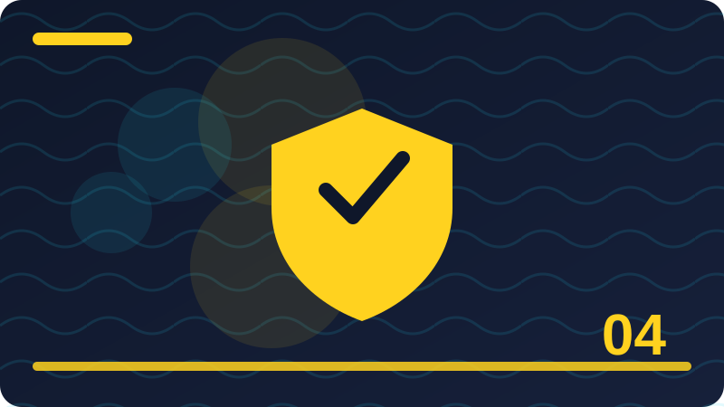

Chapter 4: Multi-Factor Authentication in Plain Words

Section 1: What Multi-Factor Authentication Means
This section explains what multi-factor authentication means in plain words, using everyday examples you can picture and steps you can actually try on your own devices and accounts. Text-message codes are better than no second factor at all, and they are a good starting point if nothing else is offered. However, they have weaknesses: messages can be intercepted in some attacks, and a determined attacker may try to persuade a mobile provider to move your number to their SIM card. If an authenticator app or a security key is offered, prefer it. If only text messages are offered, still turn them on, because most attackers are opportunists who will move on to an easier account rather than attacking your phone network. A security key is a small physical device you plug in or tap when signing in, and it is one of the strongest second factors available. It proves you have the key and, importantly, it checks that you are signing in to the real website, not a convincing fake. That makes it very hard for phishing sites to steal its proof. Security keys cost money and can be lost, so buy from a reputable source, register a spare key where the service allows it, and store backup codes safely. For your most important accounts, a key is worth considering. Backup codes are one-time codes a service gives you when you turn on multi-factor authentication, to use if you lose your phone or key. Treat them like spare house keys: print them or write them down, store them somewhere safe at home, and never photograph them, email them to yourself, or share them in a message. Test your recovery options before an emergency, while you still have access. Many people lock themselves out not because they were attacked, but because they lost a device and never saved the backup codes. Push approvals, where your phone asks you to tap approve for a sign-in, are convenient, but they need care. Attackers sometimes trigger many approval requests late at night, hoping a tired person taps approve just to stop the noise. This is called approval fatigue, and the defence is simple: never approve a sign-in you did not start yourself, and check the location and device details shown in the request. If approvals arrive unexpectedly, treat them as a warning that someone may have your password, and change that password promptly. A small habit repeated every day protects you far more than one big effort made only once in a while. When you are unsure about a message, a link, or a request, pausing before you act is always the safer choice. Write down what you changed and why, so you can check it later and help someone else understand your decision. Good security feels ordinary most of the time, because it is built from simple steps done in the right order. If a step feels rushed or secretive, treat that feeling as useful information and slow down before you continue.
Check: In your own words, explain what multi-factor authentication means and give one everyday example of it in action.
Section 2: Something You Know, Have, or Are
This section explains something you know, have, or are in plain words, using everyday examples you can picture and steps you can actually try on your own devices and accounts. Push approvals, where your phone asks you to tap approve for a sign-in, are convenient, but they need care. Attackers sometimes trigger many approval requests late at night, hoping a tired person taps approve just to stop the noise. This is called approval fatigue, and the defence is simple: never approve a sign-in you did not start yourself, and check the location and device details shown in the request. If approvals arrive unexpectedly, treat them as a warning that someone may have your password, and change that password promptly. Biometrics, such as fingerprints and face recognition, are convenient because you always carry them, but they work differently from passwords. You cannot change a fingerprint if it is copied, and in some places you may be asked to unlock a device physically. For that reason, biometrics work best as a convenient lock on a device you hold, combined with a strong PIN or password as a fallback, rather than as your only protection. On a phone, a fingerprint plus a good PIN is a sensible, everyday combination that balances safety and ease. Turning on multi-factor authentication starts with your email, because email can reset so many other accounts. After email, protect banking, cloud storage, social accounts, and work accounts, in that order of impact. Go to each account's security settings, choose the strongest second factor it offers, save the backup codes, and test signing in once. This takes a little time, but you only set it up once per account, and from then on it protects you quietly in the background every single day. Losing a second factor is stressful, but it is a recoverable problem if you prepared. Use the service's account recovery process, which usually asks for backup codes, a spare key, or identity checks through a trusted channel. Never accept help from a stranger who offers to bypass the check for you, and never share a code that arrives on your phone with anyone, including someone claiming to be support staff. Real support staff will never ask for your code, because the code is meant for you alone, at the moment you sign in. A small habit repeated every day protects you far more than one big effort made only once in a while. When you are unsure about a message, a link, or a request, pausing before you act is always the safer choice. Write down what you changed and why, so you can check it later and help someone else understand your decision. Good security feels ordinary most of the time, because it is built from simple steps done in the right order. If a step feels rushed or secretive, treat that feeling as useful information and slow down before you continue. Share what you learn with family and friends, because a household that understands the basics is harder to trick.
Check: In your own words, explain something you know, have, or are and give one everyday example of it in action.
Section 3: Authenticator Apps in Plain Words
This section explains authenticator apps in plain words in plain words, using everyday examples you can picture and steps you can actually try on your own devices and accounts. Losing a second factor is stressful, but it is a recoverable problem if you prepared. Use the service's account recovery process, which usually asks for backup codes, a spare key, or identity checks through a trusted channel. Never accept help from a stranger who offers to bypass the check for you, and never share a code that arrives on your phone with anyone, including someone claiming to be support staff. Real support staff will never ask for your code, because the code is meant for you alone, at the moment you sign in. For families and workplaces, multi-factor authentication protects everyone connected to an account, not just its owner. A shared work account without a second factor can become a door into a whole organisation, and a family email account without one can be used to trick relatives. Encourage the people around you to turn it on, help them save backup codes safely, and agree that codes are never shared, even between trusted family members. A household where everyone uses a second factor is much harder to trick as a group. Multi-factor authentication is not perfect, and honest teaching should say so. Determined attackers can still trick people into handing over codes, and no protection removes the need for careful judgement. What it does, reliably, is raise the effort and skill an attacker needs, and block the vast majority of automated and opportunistic attacks. Combined with unique passwords, updates, and backups, it turns your accounts from easy targets into hard ones, and that is a practical, lasting improvement worth making this week. Multi-factor authentication, often shortened to MFA or two-factor authentication, means proving who you are in more than one way before an account opens. A password is something you know. A code from your phone, a fingerprint, or a security key is a second, different kind of proof. Even if an attacker learns your password, they still lack that second proof, so the account stays closed. This one change blocks a very large share of account takeovers, which is why it is the most valuable habit in this whole book after unique passwords. A small habit repeated every day protects you far more than one big effort made only once in a while. When you are unsure about a message, a link, or a request, pausing before you act is always the safer choice. Write down what you changed and why, so you can check it later and help someone else understand your decision. Good security feels ordinary most of the time, because it is built from simple steps done in the right order. If a step feels rushed or secretive, treat that feeling as useful information and slow down before you continue. Share what you learn with family and friends, because a household that understands the basics is harder to trick.
Check: In your own words, explain authenticator apps in plain words and give one everyday example of it in action.
Section 4: Text-Message Codes: Better Than Nothing
This section explains text-message codes: better than nothing in plain words, using everyday examples you can picture and steps you can actually try on your own devices and accounts. Multi-factor authentication, often shortened to MFA or two-factor authentication, means proving who you are in more than one way before an account opens. A password is something you know. A code from your phone, a fingerprint, or a security key is a second, different kind of proof. Even if an attacker learns your password, they still lack that second proof, so the account stays closed. This one change blocks a very large share of account takeovers, which is why it is the most valuable habit in this whole book after unique passwords. The three kinds of proof are easy to remember: something you know, like a password or PIN; something you have, like a phone or a security key; and something you are, like a fingerprint or face. A good second factor uses a different kind than your password, so that stealing one kind does not give an attacker both. A code sent to your phone is something you have, while a fingerprint is something you are. Mixing kinds is the whole point, and it is what makes the check genuinely stronger than a second password would be. Authenticator apps generate time-based codes on your phone that change every thirty seconds or so. They work without a mobile signal, because the app and the service share a secret setup and the current time. When you set one up, you scan a code or type a secret, and from then on the app shows fresh codes. This method is stronger than text-message codes, because it does not depend on your phone network, and it cannot be easily redirected by someone who tricks your mobile provider. Keep backup codes safe when you set it up. Text-message codes are better than no second factor at all, and they are a good starting point if nothing else is offered. However, they have weaknesses: messages can be intercepted in some attacks, and a determined attacker may try to persuade a mobile provider to move your number to their SIM card. If an authenticator app or a security key is offered, prefer it. If only text messages are offered, still turn them on, because most attackers are opportunists who will move on to an easier account rather than attacking your phone network. A small habit repeated every day protects you far more than one big effort made only once in a while. When you are unsure about a message, a link, or a request, pausing before you act is always the safer choice. Write down what you changed and why, so you can check it later and help someone else understand your decision. Good security feels ordinary most of the time, because it is built from simple steps done in the right order. If a step feels rushed or secretive, treat that feeling as useful information and slow down before you continue.
Check: In your own words, explain text-message codes: better than nothing and give one everyday example of it in action.
Section 5: Security Keys: Small, Strong, Physical
This section explains security keys: small, strong, physical in plain words, using everyday examples you can picture and steps you can actually try on your own devices and accounts. Text-message codes are better than no second factor at all, and they are a good starting point if nothing else is offered. However, they have weaknesses: messages can be intercepted in some attacks, and a determined attacker may try to persuade a mobile provider to move your number to their SIM card. If an authenticator app or a security key is offered, prefer it. If only text messages are offered, still turn them on, because most attackers are opportunists who will move on to an easier account rather than attacking your phone network. A security key is a small physical device you plug in or tap when signing in, and it is one of the strongest second factors available. It proves you have the key and, importantly, it checks that you are signing in to the real website, not a convincing fake. That makes it very hard for phishing sites to steal its proof. Security keys cost money and can be lost, so buy from a reputable source, register a spare key where the service allows it, and store backup codes safely. For your most important accounts, a key is worth considering. Backup codes are one-time codes a service gives you when you turn on multi-factor authentication, to use if you lose your phone or key. Treat them like spare house keys: print them or write them down, store them somewhere safe at home, and never photograph them, email them to yourself, or share them in a message. Test your recovery options before an emergency, while you still have access. Many people lock themselves out not because they were attacked, but because they lost a device and never saved the backup codes. Push approvals, where your phone asks you to tap approve for a sign-in, are convenient, but they need care. Attackers sometimes trigger many approval requests late at night, hoping a tired person taps approve just to stop the noise. This is called approval fatigue, and the defence is simple: never approve a sign-in you did not start yourself, and check the location and device details shown in the request. If approvals arrive unexpectedly, treat them as a warning that someone may have your password, and change that password promptly. A small habit repeated every day protects you far more than one big effort made only once in a while. When you are unsure about a message, a link, or a request, pausing before you act is always the safer choice. Write down what you changed and why, so you can check it later and help someone else understand your decision. Good security feels ordinary most of the time, because it is built from simple steps done in the right order. If a step feels rushed or secretive, treat that feeling as useful information and slow down before you continue.
import time
def code_is_fresh(code_time, now=None, window=30):
now = now if now is not None else int(time.time())
return (now - code_time) < window
print('Code still fresh?', code_is_fresh(int(time.time()) - 10))Check: In your own words, explain security keys: small, strong, physical and give one everyday example of it in action.
Section 6: Backup Codes Are Spare Keys
This section explains backup codes are spare keys in plain words, using everyday examples you can picture and steps you can actually try on your own devices and accounts. Push approvals, where your phone asks you to tap approve for a sign-in, are convenient, but they need care. Attackers sometimes trigger many approval requests late at night, hoping a tired person taps approve just to stop the noise. This is called approval fatigue, and the defence is simple: never approve a sign-in you did not start yourself, and check the location and device details shown in the request. If approvals arrive unexpectedly, treat them as a warning that someone may have your password, and change that password promptly. Biometrics, such as fingerprints and face recognition, are convenient because you always carry them, but they work differently from passwords. You cannot change a fingerprint if it is copied, and in some places you may be asked to unlock a device physically. For that reason, biometrics work best as a convenient lock on a device you hold, combined with a strong PIN or password as a fallback, rather than as your only protection. On a phone, a fingerprint plus a good PIN is a sensible, everyday combination that balances safety and ease. Turning on multi-factor authentication starts with your email, because email can reset so many other accounts. After email, protect banking, cloud storage, social accounts, and work accounts, in that order of impact. Go to each account's security settings, choose the strongest second factor it offers, save the backup codes, and test signing in once. This takes a little time, but you only set it up once per account, and from then on it protects you quietly in the background every single day. Losing a second factor is stressful, but it is a recoverable problem if you prepared. Use the service's account recovery process, which usually asks for backup codes, a spare key, or identity checks through a trusted channel. Never accept help from a stranger who offers to bypass the check for you, and never share a code that arrives on your phone with anyone, including someone claiming to be support staff. Real support staff will never ask for your code, because the code is meant for you alone, at the moment you sign in. A small habit repeated every day protects you far more than one big effort made only once in a while. When you are unsure about a message, a link, or a request, pausing before you act is always the safer choice. Write down what you changed and why, so you can check it later and help someone else understand your decision. Good security feels ordinary most of the time, because it is built from simple steps done in the right order. If a step feels rushed or secretive, treat that feeling as useful information and slow down before you continue. Share what you learn with family and friends, because a household that understands the basics is harder to trick.
Check: In your own words, explain backup codes are spare keys and give one everyday example of it in action.
Section 7: Push Approvals and Approval Fatigue
This section explains push approvals and approval fatigue in plain words, using everyday examples you can picture and steps you can actually try on your own devices and accounts. Losing a second factor is stressful, but it is a recoverable problem if you prepared. Use the service's account recovery process, which usually asks for backup codes, a spare key, or identity checks through a trusted channel. Never accept help from a stranger who offers to bypass the check for you, and never share a code that arrives on your phone with anyone, including someone claiming to be support staff. Real support staff will never ask for your code, because the code is meant for you alone, at the moment you sign in. For families and workplaces, multi-factor authentication protects everyone connected to an account, not just its owner. A shared work account without a second factor can become a door into a whole organisation, and a family email account without one can be used to trick relatives. Encourage the people around you to turn it on, help them save backup codes safely, and agree that codes are never shared, even between trusted family members. A household where everyone uses a second factor is much harder to trick as a group. Multi-factor authentication is not perfect, and honest teaching should say so. Determined attackers can still trick people into handing over codes, and no protection removes the need for careful judgement. What it does, reliably, is raise the effort and skill an attacker needs, and block the vast majority of automated and opportunistic attacks. Combined with unique passwords, updates, and backups, it turns your accounts from easy targets into hard ones, and that is a practical, lasting improvement worth making this week. Multi-factor authentication, often shortened to MFA or two-factor authentication, means proving who you are in more than one way before an account opens. A password is something you know. A code from your phone, a fingerprint, or a security key is a second, different kind of proof. Even if an attacker learns your password, they still lack that second proof, so the account stays closed. This one change blocks a very large share of account takeovers, which is why it is the most valuable habit in this whole book after unique passwords. A small habit repeated every day protects you far more than one big effort made only once in a while. When you are unsure about a message, a link, or a request, pausing before you act is always the safer choice. Write down what you changed and why, so you can check it later and help someone else understand your decision. Good security feels ordinary most of the time, because it is built from simple steps done in the right order. If a step feels rushed or secretive, treat that feeling as useful information and slow down before you continue. Share what you learn with family and friends, because a household that understands the basics is harder to trick.
Check: In your own words, explain push approvals and approval fatigue and give one everyday example of it in action.
Section 8: Fingerprints, Faces and Their Limits
This section explains fingerprints, faces and their limits in plain words, using everyday examples you can picture and steps you can actually try on your own devices and accounts. Multi-factor authentication, often shortened to MFA or two-factor authentication, means proving who you are in more than one way before an account opens. A password is something you know. A code from your phone, a fingerprint, or a security key is a second, different kind of proof. Even if an attacker learns your password, they still lack that second proof, so the account stays closed. This one change blocks a very large share of account takeovers, which is why it is the most valuable habit in this whole book after unique passwords. The three kinds of proof are easy to remember: something you know, like a password or PIN; something you have, like a phone or a security key; and something you are, like a fingerprint or face. A good second factor uses a different kind than your password, so that stealing one kind does not give an attacker both. A code sent to your phone is something you have, while a fingerprint is something you are. Mixing kinds is the whole point, and it is what makes the check genuinely stronger than a second password would be. Authenticator apps generate time-based codes on your phone that change every thirty seconds or so. They work without a mobile signal, because the app and the service share a secret setup and the current time. When you set one up, you scan a code or type a secret, and from then on the app shows fresh codes. This method is stronger than text-message codes, because it does not depend on your phone network, and it cannot be easily redirected by someone who tricks your mobile provider. Keep backup codes safe when you set it up. Text-message codes are better than no second factor at all, and they are a good starting point if nothing else is offered. However, they have weaknesses: messages can be intercepted in some attacks, and a determined attacker may try to persuade a mobile provider to move your number to their SIM card. If an authenticator app or a security key is offered, prefer it. If only text messages are offered, still turn them on, because most attackers are opportunists who will move on to an easier account rather than attacking your phone network. A small habit repeated every day protects you far more than one big effort made only once in a while. When you are unsure about a message, a link, or a request, pausing before you act is always the safer choice. Write down what you changed and why, so you can check it later and help someone else understand your decision. Good security feels ordinary most of the time, because it is built from simple steps done in the right order. If a step feels rushed or secretive, treat that feeling as useful information and slow down before you continue.
Check: In your own words, explain fingerprints, faces and their limits and give one everyday example of it in action.
Section 9: Start with Email, Then the Rest
This section explains start with email, then the rest in plain words, using everyday examples you can picture and steps you can actually try on your own devices and accounts. Text-message codes are better than no second factor at all, and they are a good starting point if nothing else is offered. However, they have weaknesses: messages can be intercepted in some attacks, and a determined attacker may try to persuade a mobile provider to move your number to their SIM card. If an authenticator app or a security key is offered, prefer it. If only text messages are offered, still turn them on, because most attackers are opportunists who will move on to an easier account rather than attacking your phone network. A security key is a small physical device you plug in or tap when signing in, and it is one of the strongest second factors available. It proves you have the key and, importantly, it checks that you are signing in to the real website, not a convincing fake. That makes it very hard for phishing sites to steal its proof. Security keys cost money and can be lost, so buy from a reputable source, register a spare key where the service allows it, and store backup codes safely. For your most important accounts, a key is worth considering. Backup codes are one-time codes a service gives you when you turn on multi-factor authentication, to use if you lose your phone or key. Treat them like spare house keys: print them or write them down, store them somewhere safe at home, and never photograph them, email them to yourself, or share them in a message. Test your recovery options before an emergency, while you still have access. Many people lock themselves out not because they were attacked, but because they lost a device and never saved the backup codes. Push approvals, where your phone asks you to tap approve for a sign-in, are convenient, but they need care. Attackers sometimes trigger many approval requests late at night, hoping a tired person taps approve just to stop the noise. This is called approval fatigue, and the defence is simple: never approve a sign-in you did not start yourself, and check the location and device details shown in the request. If approvals arrive unexpectedly, treat them as a warning that someone may have your password, and change that password promptly. A small habit repeated every day protects you far more than one big effort made only once in a while. When you are unsure about a message, a link, or a request, pausing before you act is always the safer choice. Write down what you changed and why, so you can check it later and help someone else understand your decision. Good security feels ordinary most of the time, because it is built from simple steps done in the right order. If a step feels rushed or secretive, treat that feeling as useful information and slow down before you continue.
Check: In your own words, explain start with email, then the rest and give one everyday example of it in action.
Section 10: When You Lose Your Second Factor
This section explains when you lose your second factor in plain words, using everyday examples you can picture and steps you can actually try on your own devices and accounts. Push approvals, where your phone asks you to tap approve for a sign-in, are convenient, but they need care. Attackers sometimes trigger many approval requests late at night, hoping a tired person taps approve just to stop the noise. This is called approval fatigue, and the defence is simple: never approve a sign-in you did not start yourself, and check the location and device details shown in the request. If approvals arrive unexpectedly, treat them as a warning that someone may have your password, and change that password promptly. Biometrics, such as fingerprints and face recognition, are convenient because you always carry them, but they work differently from passwords. You cannot change a fingerprint if it is copied, and in some places you may be asked to unlock a device physically. For that reason, biometrics work best as a convenient lock on a device you hold, combined with a strong PIN or password as a fallback, rather than as your only protection. On a phone, a fingerprint plus a good PIN is a sensible, everyday combination that balances safety and ease. Turning on multi-factor authentication starts with your email, because email can reset so many other accounts. After email, protect banking, cloud storage, social accounts, and work accounts, in that order of impact. Go to each account's security settings, choose the strongest second factor it offers, save the backup codes, and test signing in once. This takes a little time, but you only set it up once per account, and from then on it protects you quietly in the background every single day. Losing a second factor is stressful, but it is a recoverable problem if you prepared. Use the service's account recovery process, which usually asks for backup codes, a spare key, or identity checks through a trusted channel. Never accept help from a stranger who offers to bypass the check for you, and never share a code that arrives on your phone with anyone, including someone claiming to be support staff. Real support staff will never ask for your code, because the code is meant for you alone, at the moment you sign in. A small habit repeated every day protects you far more than one big effort made only once in a while. When you are unsure about a message, a link, or a request, pausing before you act is always the safer choice. Write down what you changed and why, so you can check it later and help someone else understand your decision. Good security feels ordinary most of the time, because it is built from simple steps done in the right order. If a step feels rushed or secretive, treat that feeling as useful information and slow down before you continue. Share what you learn with family and friends, because a household that understands the basics is harder to trick.
Check: In your own words, explain when you lose your second factor and give one everyday example of it in action.
Section 11: Never Share a Code with Anyone
This section explains never share a code with anyone in plain words, using everyday examples you can picture and steps you can actually try on your own devices and accounts. Losing a second factor is stressful, but it is a recoverable problem if you prepared. Use the service's account recovery process, which usually asks for backup codes, a spare key, or identity checks through a trusted channel. Never accept help from a stranger who offers to bypass the check for you, and never share a code that arrives on your phone with anyone, including someone claiming to be support staff. Real support staff will never ask for your code, because the code is meant for you alone, at the moment you sign in. For families and workplaces, multi-factor authentication protects everyone connected to an account, not just its owner. A shared work account without a second factor can become a door into a whole organisation, and a family email account without one can be used to trick relatives. Encourage the people around you to turn it on, help them save backup codes safely, and agree that codes are never shared, even between trusted family members. A household where everyone uses a second factor is much harder to trick as a group. Multi-factor authentication is not perfect, and honest teaching should say so. Determined attackers can still trick people into handing over codes, and no protection removes the need for careful judgement. What it does, reliably, is raise the effort and skill an attacker needs, and block the vast majority of automated and opportunistic attacks. Combined with unique passwords, updates, and backups, it turns your accounts from easy targets into hard ones, and that is a practical, lasting improvement worth making this week. Multi-factor authentication, often shortened to MFA or two-factor authentication, means proving who you are in more than one way before an account opens. A password is something you know. A code from your phone, a fingerprint, or a security key is a second, different kind of proof. Even if an attacker learns your password, they still lack that second proof, so the account stays closed. This one change blocks a very large share of account takeovers, which is why it is the most valuable habit in this whole book after unique passwords. A small habit repeated every day protects you far more than one big effort made only once in a while. When you are unsure about a message, a link, or a request, pausing before you act is always the safer choice. Write down what you changed and why, so you can check it later and help someone else understand your decision. Good security feels ordinary most of the time, because it is built from simple steps done in the right order. If a step feels rushed or secretive, treat that feeling as useful information and slow down before you continue. Share what you learn with family and friends, because a household that understands the basics is harder to trick.
Check: In your own words, explain never share a code with anyone and give one everyday example of it in action.
Section 12: Why This Is Not Perfect, but Still Worth It
This section explains why this is not perfect, but still worth it in plain words, using everyday examples you can picture and steps you can actually try on your own devices and accounts. Multi-factor authentication, often shortened to MFA or two-factor authentication, means proving who you are in more than one way before an account opens. A password is something you know. A code from your phone, a fingerprint, or a security key is a second, different kind of proof. Even if an attacker learns your password, they still lack that second proof, so the account stays closed. This one change blocks a very large share of account takeovers, which is why it is the most valuable habit in this whole book after unique passwords. The three kinds of proof are easy to remember: something you know, like a password or PIN; something you have, like a phone or a security key; and something you are, like a fingerprint or face. A good second factor uses a different kind than your password, so that stealing one kind does not give an attacker both. A code sent to your phone is something you have, while a fingerprint is something you are. Mixing kinds is the whole point, and it is what makes the check genuinely stronger than a second password would be. Authenticator apps generate time-based codes on your phone that change every thirty seconds or so. They work without a mobile signal, because the app and the service share a secret setup and the current time. When you set one up, you scan a code or type a secret, and from then on the app shows fresh codes. This method is stronger than text-message codes, because it does not depend on your phone network, and it cannot be easily redirected by someone who tricks your mobile provider. Keep backup codes safe when you set it up. Text-message codes are better than no second factor at all, and they are a good starting point if nothing else is offered. However, they have weaknesses: messages can be intercepted in some attacks, and a determined attacker may try to persuade a mobile provider to move your number to their SIM card. If an authenticator app or a security key is offered, prefer it. If only text messages are offered, still turn them on, because most attackers are opportunists who will move on to an easier account rather than attacking your phone network. A small habit repeated every day protects you far more than one big effort made only once in a while. When you are unsure about a message, a link, or a request, pausing before you act is always the safer choice. Write down what you changed and why, so you can check it later and help someone else understand your decision. Good security feels ordinary most of the time, because it is built from simple steps done in the right order. If a step feels rushed or secretive, treat that feeling as useful information and slow down before you continue.
Check: In your own words, explain why this is not perfect, but still worth it and give one everyday example of it in action.
Section 13: Setting Up an Authenticator App Step by Step
This section explains setting up an authenticator app step by step in plain words, using everyday examples you can picture and steps you can actually try on your own devices and accounts. Text-message codes are better than no second factor at all, and they are a good starting point if nothing else is offered. However, they have weaknesses: messages can be intercepted in some attacks, and a determined attacker may try to persuade a mobile provider to move your number to their SIM card. If an authenticator app or a security key is offered, prefer it. If only text messages are offered, still turn them on, because most attackers are opportunists who will move on to an easier account rather than attacking your phone network. A security key is a small physical device you plug in or tap when signing in, and it is one of the strongest second factors available. It proves you have the key and, importantly, it checks that you are signing in to the real website, not a convincing fake. That makes it very hard for phishing sites to steal its proof. Security keys cost money and can be lost, so buy from a reputable source, register a spare key where the service allows it, and store backup codes safely. For your most important accounts, a key is worth considering. Backup codes are one-time codes a service gives you when you turn on multi-factor authentication, to use if you lose your phone or key. Treat them like spare house keys: print them or write them down, store them somewhere safe at home, and never photograph them, email them to yourself, or share them in a message. Test your recovery options before an emergency, while you still have access. Many people lock themselves out not because they were attacked, but because they lost a device and never saved the backup codes. Push approvals, where your phone asks you to tap approve for a sign-in, are convenient, but they need care. Attackers sometimes trigger many approval requests late at night, hoping a tired person taps approve just to stop the noise. This is called approval fatigue, and the defence is simple: never approve a sign-in you did not start yourself, and check the location and device details shown in the request. If approvals arrive unexpectedly, treat them as a warning that someone may have your password, and change that password promptly. A small habit repeated every day protects you far more than one big effort made only once in a while. When you are unsure about a message, a link, or a request, pausing before you act is always the safer choice. Write down what you changed and why, so you can check it later and help someone else understand your decision. Good security feels ordinary most of the time, because it is built from simple steps done in the right order. If a step feels rushed or secretive, treat that feeling as useful information and slow down before you continue.
Check: In your own words, explain setting up an authenticator app step by step and give one everyday example of it in action.
Section 14: Setting Up a Security Key Step by Step
This section explains setting up a security key step by step in plain words, using everyday examples you can picture and steps you can actually try on your own devices and accounts. Push approvals, where your phone asks you to tap approve for a sign-in, are convenient, but they need care. Attackers sometimes trigger many approval requests late at night, hoping a tired person taps approve just to stop the noise. This is called approval fatigue, and the defence is simple: never approve a sign-in you did not start yourself, and check the location and device details shown in the request. If approvals arrive unexpectedly, treat them as a warning that someone may have your password, and change that password promptly. Biometrics, such as fingerprints and face recognition, are convenient because you always carry them, but they work differently from passwords. You cannot change a fingerprint if it is copied, and in some places you may be asked to unlock a device physically. For that reason, biometrics work best as a convenient lock on a device you hold, combined with a strong PIN or password as a fallback, rather than as your only protection. On a phone, a fingerprint plus a good PIN is a sensible, everyday combination that balances safety and ease. Turning on multi-factor authentication starts with your email, because email can reset so many other accounts. After email, protect banking, cloud storage, social accounts, and work accounts, in that order of impact. Go to each account's security settings, choose the strongest second factor it offers, save the backup codes, and test signing in once. This takes a little time, but you only set it up once per account, and from then on it protects you quietly in the background every single day. Losing a second factor is stressful, but it is a recoverable problem if you prepared. Use the service's account recovery process, which usually asks for backup codes, a spare key, or identity checks through a trusted channel. Never accept help from a stranger who offers to bypass the check for you, and never share a code that arrives on your phone with anyone, including someone claiming to be support staff. Real support staff will never ask for your code, because the code is meant for you alone, at the moment you sign in. A small habit repeated every day protects you far more than one big effort made only once in a while. When you are unsure about a message, a link, or a request, pausing before you act is always the safer choice. Write down what you changed and why, so you can check it later and help someone else understand your decision. Good security feels ordinary most of the time, because it is built from simple steps done in the right order. If a step feels rushed or secretive, treat that feeling as useful information and slow down before you continue. Share what you learn with family and friends, because a household that understands the basics is harder to trick.
Check: In your own words, explain setting up a security key step by step and give one everyday example of it in action.
Section 15: Choosing the Strongest Option Each Site Offers
This section explains choosing the strongest option each site offers in plain words, using everyday examples you can picture and steps you can actually try on your own devices and accounts. Losing a second factor is stressful, but it is a recoverable problem if you prepared. Use the service's account recovery process, which usually asks for backup codes, a spare key, or identity checks through a trusted channel. Never accept help from a stranger who offers to bypass the check for you, and never share a code that arrives on your phone with anyone, including someone claiming to be support staff. Real support staff will never ask for your code, because the code is meant for you alone, at the moment you sign in. For families and workplaces, multi-factor authentication protects everyone connected to an account, not just its owner. A shared work account without a second factor can become a door into a whole organisation, and a family email account without one can be used to trick relatives. Encourage the people around you to turn it on, help them save backup codes safely, and agree that codes are never shared, even between trusted family members. A household where everyone uses a second factor is much harder to trick as a group. Multi-factor authentication is not perfect, and honest teaching should say so. Determined attackers can still trick people into handing over codes, and no protection removes the need for careful judgement. What it does, reliably, is raise the effort and skill an attacker needs, and block the vast majority of automated and opportunistic attacks. Combined with unique passwords, updates, and backups, it turns your accounts from easy targets into hard ones, and that is a practical, lasting improvement worth making this week. Multi-factor authentication, often shortened to MFA or two-factor authentication, means proving who you are in more than one way before an account opens. A password is something you know. A code from your phone, a fingerprint, or a security key is a second, different kind of proof. Even if an attacker learns your password, they still lack that second proof, so the account stays closed. This one change blocks a very large share of account takeovers, which is why it is the most valuable habit in this whole book after unique passwords. A small habit repeated every day protects you far more than one big effort made only once in a while. When you are unsure about a message, a link, or a request, pausing before you act is always the safer choice. Write down what you changed and why, so you can check it later and help someone else understand your decision. Good security feels ordinary most of the time, because it is built from simple steps done in the right order. If a step feels rushed or secretive, treat that feeling as useful information and slow down before you continue. Share what you learn with family and friends, because a household that understands the basics is harder to trick.
def protection_checklist(accounts):
for name, factors in accounts.items():
status = 'Protected' if factors >= 2 else 'Add a second factor'
print(name, '-', status)
protection_checklist({'email': 2, 'bank': 2, 'forum': 1})Check: In your own words, explain choosing the strongest option each site offers and give one everyday example of it in action.
Section 16: What to Do with Unexpected Approval Requests
This section explains what to do with unexpected approval requests in plain words, using everyday examples you can picture and steps you can actually try on your own devices and accounts. Multi-factor authentication, often shortened to MFA or two-factor authentication, means proving who you are in more than one way before an account opens. A password is something you know. A code from your phone, a fingerprint, or a security key is a second, different kind of proof. Even if an attacker learns your password, they still lack that second proof, so the account stays closed. This one change blocks a very large share of account takeovers, which is why it is the most valuable habit in this whole book after unique passwords. The three kinds of proof are easy to remember: something you know, like a password or PIN; something you have, like a phone or a security key; and something you are, like a fingerprint or face. A good second factor uses a different kind than your password, so that stealing one kind does not give an attacker both. A code sent to your phone is something you have, while a fingerprint is something you are. Mixing kinds is the whole point, and it is what makes the check genuinely stronger than a second password would be. Authenticator apps generate time-based codes on your phone that change every thirty seconds or so. They work without a mobile signal, because the app and the service share a secret setup and the current time. When you set one up, you scan a code or type a secret, and from then on the app shows fresh codes. This method is stronger than text-message codes, because it does not depend on your phone network, and it cannot be easily redirected by someone who tricks your mobile provider. Keep backup codes safe when you set it up. Text-message codes are better than no second factor at all, and they are a good starting point if nothing else is offered. However, they have weaknesses: messages can be intercepted in some attacks, and a determined attacker may try to persuade a mobile provider to move your number to their SIM card. If an authenticator app or a security key is offered, prefer it. If only text messages are offered, still turn them on, because most attackers are opportunists who will move on to an easier account rather than attacking your phone network. A small habit repeated every day protects you far more than one big effort made only once in a while. When you are unsure about a message, a link, or a request, pausing before you act is always the safer choice. Write down what you changed and why, so you can check it later and help someone else understand your decision. Good security feels ordinary most of the time, because it is built from simple steps done in the right order. If a step feels rushed or secretive, treat that feeling as useful information and slow down before you continue.
Check: In your own words, explain what to do with unexpected approval requests and give one everyday example of it in action.
Section 17: Recovering an Account Safely
This section explains recovering an account safely in plain words, using everyday examples you can picture and steps you can actually try on your own devices and accounts. Text-message codes are better than no second factor at all, and they are a good starting point if nothing else is offered. However, they have weaknesses: messages can be intercepted in some attacks, and a determined attacker may try to persuade a mobile provider to move your number to their SIM card. If an authenticator app or a security key is offered, prefer it. If only text messages are offered, still turn them on, because most attackers are opportunists who will move on to an easier account rather than attacking your phone network. A security key is a small physical device you plug in or tap when signing in, and it is one of the strongest second factors available. It proves you have the key and, importantly, it checks that you are signing in to the real website, not a convincing fake. That makes it very hard for phishing sites to steal its proof. Security keys cost money and can be lost, so buy from a reputable source, register a spare key where the service allows it, and store backup codes safely. For your most important accounts, a key is worth considering. Backup codes are one-time codes a service gives you when you turn on multi-factor authentication, to use if you lose your phone or key. Treat them like spare house keys: print them or write them down, store them somewhere safe at home, and never photograph them, email them to yourself, or share them in a message. Test your recovery options before an emergency, while you still have access. Many people lock themselves out not because they were attacked, but because they lost a device and never saved the backup codes. Push approvals, where your phone asks you to tap approve for a sign-in, are convenient, but they need care. Attackers sometimes trigger many approval requests late at night, hoping a tired person taps approve just to stop the noise. This is called approval fatigue, and the defence is simple: never approve a sign-in you did not start yourself, and check the location and device details shown in the request. If approvals arrive unexpectedly, treat them as a warning that someone may have your password, and change that password promptly. A small habit repeated every day protects you far more than one big effort made only once in a while. When you are unsure about a message, a link, or a request, pausing before you act is always the safer choice. Write down what you changed and why, so you can check it later and help someone else understand your decision. Good security feels ordinary most of the time, because it is built from simple steps done in the right order. If a step feels rushed or secretive, treat that feeling as useful information and slow down before you continue.
Check: In your own words, explain recovering an account safely and give one everyday example of it in action.
Section 18: Multi-Factor Authentication at Work
This section explains multi-factor authentication at work in plain words, using everyday examples you can picture and steps you can actually try on your own devices and accounts. Push approvals, where your phone asks you to tap approve for a sign-in, are convenient, but they need care. Attackers sometimes trigger many approval requests late at night, hoping a tired person taps approve just to stop the noise. This is called approval fatigue, and the defence is simple: never approve a sign-in you did not start yourself, and check the location and device details shown in the request. If approvals arrive unexpectedly, treat them as a warning that someone may have your password, and change that password promptly. Biometrics, such as fingerprints and face recognition, are convenient because you always carry them, but they work differently from passwords. You cannot change a fingerprint if it is copied, and in some places you may be asked to unlock a device physically. For that reason, biometrics work best as a convenient lock on a device you hold, combined with a strong PIN or password as a fallback, rather than as your only protection. On a phone, a fingerprint plus a good PIN is a sensible, everyday combination that balances safety and ease. Turning on multi-factor authentication starts with your email, because email can reset so many other accounts. After email, protect banking, cloud storage, social accounts, and work accounts, in that order of impact. Go to each account's security settings, choose the strongest second factor it offers, save the backup codes, and test signing in once. This takes a little time, but you only set it up once per account, and from then on it protects you quietly in the background every single day. Losing a second factor is stressful, but it is a recoverable problem if you prepared. Use the service's account recovery process, which usually asks for backup codes, a spare key, or identity checks through a trusted channel. Never accept help from a stranger who offers to bypass the check for you, and never share a code that arrives on your phone with anyone, including someone claiming to be support staff. Real support staff will never ask for your code, because the code is meant for you alone, at the moment you sign in. A small habit repeated every day protects you far more than one big effort made only once in a while. When you are unsure about a message, a link, or a request, pausing before you act is always the safer choice. Write down what you changed and why, so you can check it later and help someone else understand your decision. Good security feels ordinary most of the time, because it is built from simple steps done in the right order. If a step feels rushed or secretive, treat that feeling as useful information and slow down before you continue. Share what you learn with family and friends, because a household that understands the basics is harder to trick.
Check: In your own words, explain multi-factor authentication at work and give one everyday example of it in action.
Section 19: Multi-Factor Authentication for Families
This section explains multi-factor authentication for families in plain words, using everyday examples you can picture and steps you can actually try on your own devices and accounts. Losing a second factor is stressful, but it is a recoverable problem if you prepared. Use the service's account recovery process, which usually asks for backup codes, a spare key, or identity checks through a trusted channel. Never accept help from a stranger who offers to bypass the check for you, and never share a code that arrives on your phone with anyone, including someone claiming to be support staff. Real support staff will never ask for your code, because the code is meant for you alone, at the moment you sign in. For families and workplaces, multi-factor authentication protects everyone connected to an account, not just its owner. A shared work account without a second factor can become a door into a whole organisation, and a family email account without one can be used to trick relatives. Encourage the people around you to turn it on, help them save backup codes safely, and agree that codes are never shared, even between trusted family members. A household where everyone uses a second factor is much harder to trick as a group. Multi-factor authentication is not perfect, and honest teaching should say so. Determined attackers can still trick people into handing over codes, and no protection removes the need for careful judgement. What it does, reliably, is raise the effort and skill an attacker needs, and block the vast majority of automated and opportunistic attacks. Combined with unique passwords, updates, and backups, it turns your accounts from easy targets into hard ones, and that is a practical, lasting improvement worth making this week. Multi-factor authentication, often shortened to MFA or two-factor authentication, means proving who you are in more than one way before an account opens. A password is something you know. A code from your phone, a fingerprint, or a security key is a second, different kind of proof. Even if an attacker learns your password, they still lack that second proof, so the account stays closed. This one change blocks a very large share of account takeovers, which is why it is the most valuable habit in this whole book after unique passwords. A small habit repeated every day protects you far more than one big effort made only once in a while. When you are unsure about a message, a link, or a request, pausing before you act is always the safer choice. Write down what you changed and why, so you can check it later and help someone else understand your decision. Good security feels ordinary most of the time, because it is built from simple steps done in the right order. If a step feels rushed or secretive, treat that feeling as useful information and slow down before you continue. Share what you learn with family and friends, because a household that understands the basics is harder to trick.
Check: In your own words, explain multi-factor authentication for families and give one everyday example of it in action.
Section 20: Old Phones and Changing Devices
This section explains old phones and changing devices in plain words, using everyday examples you can picture and steps you can actually try on your own devices and accounts. Multi-factor authentication, often shortened to MFA or two-factor authentication, means proving who you are in more than one way before an account opens. A password is something you know. A code from your phone, a fingerprint, or a security key is a second, different kind of proof. Even if an attacker learns your password, they still lack that second proof, so the account stays closed. This one change blocks a very large share of account takeovers, which is why it is the most valuable habit in this whole book after unique passwords. The three kinds of proof are easy to remember: something you know, like a password or PIN; something you have, like a phone or a security key; and something you are, like a fingerprint or face. A good second factor uses a different kind than your password, so that stealing one kind does not give an attacker both. A code sent to your phone is something you have, while a fingerprint is something you are. Mixing kinds is the whole point, and it is what makes the check genuinely stronger than a second password would be. Authenticator apps generate time-based codes on your phone that change every thirty seconds or so. They work without a mobile signal, because the app and the service share a secret setup and the current time. When you set one up, you scan a code or type a secret, and from then on the app shows fresh codes. This method is stronger than text-message codes, because it does not depend on your phone network, and it cannot be easily redirected by someone who tricks your mobile provider. Keep backup codes safe when you set it up. Text-message codes are better than no second factor at all, and they are a good starting point if nothing else is offered. However, they have weaknesses: messages can be intercepted in some attacks, and a determined attacker may try to persuade a mobile provider to move your number to their SIM card. If an authenticator app or a security key is offered, prefer it. If only text messages are offered, still turn them on, because most attackers are opportunists who will move on to an easier account rather than attacking your phone network. A small habit repeated every day protects you far more than one big effort made only once in a while. When you are unsure about a message, a link, or a request, pausing before you act is always the safer choice. Write down what you changed and why, so you can check it later and help someone else understand your decision. Good security feels ordinary most of the time, because it is built from simple steps done in the right order. If a step feels rushed or secretive, treat that feeling as useful information and slow down before you continue.
Check: In your own words, explain old phones and changing devices and give one everyday example of it in action.
Section 21: Moving an Authenticator to a New Phone
This section explains moving an authenticator to a new phone in plain words, using everyday examples you can picture and steps you can actually try on your own devices and accounts. Text-message codes are better than no second factor at all, and they are a good starting point if nothing else is offered. However, they have weaknesses: messages can be intercepted in some attacks, and a determined attacker may try to persuade a mobile provider to move your number to their SIM card. If an authenticator app or a security key is offered, prefer it. If only text messages are offered, still turn them on, because most attackers are opportunists who will move on to an easier account rather than attacking your phone network. A security key is a small physical device you plug in or tap when signing in, and it is one of the strongest second factors available. It proves you have the key and, importantly, it checks that you are signing in to the real website, not a convincing fake. That makes it very hard for phishing sites to steal its proof. Security keys cost money and can be lost, so buy from a reputable source, register a spare key where the service allows it, and store backup codes safely. For your most important accounts, a key is worth considering. Backup codes are one-time codes a service gives you when you turn on multi-factor authentication, to use if you lose your phone or key. Treat them like spare house keys: print them or write them down, store them somewhere safe at home, and never photograph them, email them to yourself, or share them in a message. Test your recovery options before an emergency, while you still have access. Many people lock themselves out not because they were attacked, but because they lost a device and never saved the backup codes. Push approvals, where your phone asks you to tap approve for a sign-in, are convenient, but they need care. Attackers sometimes trigger many approval requests late at night, hoping a tired person taps approve just to stop the noise. This is called approval fatigue, and the defence is simple: never approve a sign-in you did not start yourself, and check the location and device details shown in the request. If approvals arrive unexpectedly, treat them as a warning that someone may have your password, and change that password promptly. A small habit repeated every day protects you far more than one big effort made only once in a while. When you are unsure about a message, a link, or a request, pausing before you act is always the safer choice. Write down what you changed and why, so you can check it later and help someone else understand your decision. Good security feels ordinary most of the time, because it is built from simple steps done in the right order. If a step feels rushed or secretive, treat that feeling as useful information and slow down before you continue.
Check: In your own words, explain moving an authenticator to a new phone and give one everyday example of it in action.
Section 22: Two Factors on Shared Devices
This section explains two factors on shared devices in plain words, using everyday examples you can picture and steps you can actually try on your own devices and accounts. Push approvals, where your phone asks you to tap approve for a sign-in, are convenient, but they need care. Attackers sometimes trigger many approval requests late at night, hoping a tired person taps approve just to stop the noise. This is called approval fatigue, and the defence is simple: never approve a sign-in you did not start yourself, and check the location and device details shown in the request. If approvals arrive unexpectedly, treat them as a warning that someone may have your password, and change that password promptly. Biometrics, such as fingerprints and face recognition, are convenient because you always carry them, but they work differently from passwords. You cannot change a fingerprint if it is copied, and in some places you may be asked to unlock a device physically. For that reason, biometrics work best as a convenient lock on a device you hold, combined with a strong PIN or password as a fallback, rather than as your only protection. On a phone, a fingerprint plus a good PIN is a sensible, everyday combination that balances safety and ease. Turning on multi-factor authentication starts with your email, because email can reset so many other accounts. After email, protect banking, cloud storage, social accounts, and work accounts, in that order of impact. Go to each account's security settings, choose the strongest second factor it offers, save the backup codes, and test signing in once. This takes a little time, but you only set it up once per account, and from then on it protects you quietly in the background every single day. Losing a second factor is stressful, but it is a recoverable problem if you prepared. Use the service's account recovery process, which usually asks for backup codes, a spare key, or identity checks through a trusted channel. Never accept help from a stranger who offers to bypass the check for you, and never share a code that arrives on your phone with anyone, including someone claiming to be support staff. Real support staff will never ask for your code, because the code is meant for you alone, at the moment you sign in. A small habit repeated every day protects you far more than one big effort made only once in a while. When you are unsure about a message, a link, or a request, pausing before you act is always the safer choice. Write down what you changed and why, so you can check it later and help someone else understand your decision. Good security feels ordinary most of the time, because it is built from simple steps done in the right order. If a step feels rushed or secretive, treat that feeling as useful information and slow down before you continue. Share what you learn with family and friends, because a household that understands the basics is harder to trick.
Check: In your own words, explain two factors on shared devices and give one everyday example of it in action.
Section 23: Public Computers and Second Factors
This section explains public computers and second factors in plain words, using everyday examples you can picture and steps you can actually try on your own devices and accounts. Losing a second factor is stressful, but it is a recoverable problem if you prepared. Use the service's account recovery process, which usually asks for backup codes, a spare key, or identity checks through a trusted channel. Never accept help from a stranger who offers to bypass the check for you, and never share a code that arrives on your phone with anyone, including someone claiming to be support staff. Real support staff will never ask for your code, because the code is meant for you alone, at the moment you sign in. For families and workplaces, multi-factor authentication protects everyone connected to an account, not just its owner. A shared work account without a second factor can become a door into a whole organisation, and a family email account without one can be used to trick relatives. Encourage the people around you to turn it on, help them save backup codes safely, and agree that codes are never shared, even between trusted family members. A household where everyone uses a second factor is much harder to trick as a group. Multi-factor authentication is not perfect, and honest teaching should say so. Determined attackers can still trick people into handing over codes, and no protection removes the need for careful judgement. What it does, reliably, is raise the effort and skill an attacker needs, and block the vast majority of automated and opportunistic attacks. Combined with unique passwords, updates, and backups, it turns your accounts from easy targets into hard ones, and that is a practical, lasting improvement worth making this week. Multi-factor authentication, often shortened to MFA or two-factor authentication, means proving who you are in more than one way before an account opens. A password is something you know. A code from your phone, a fingerprint, or a security key is a second, different kind of proof. Even if an attacker learns your password, they still lack that second proof, so the account stays closed. This one change blocks a very large share of account takeovers, which is why it is the most valuable habit in this whole book after unique passwords. A small habit repeated every day protects you far more than one big effort made only once in a while. When you are unsure about a message, a link, or a request, pausing before you act is always the safer choice. Write down what you changed and why, so you can check it later and help someone else understand your decision. Good security feels ordinary most of the time, because it is built from simple steps done in the right order. If a step feels rushed or secretive, treat that feeling as useful information and slow down before you continue. Share what you learn with family and friends, because a household that understands the basics is harder to trick.
Check: In your own words, explain public computers and second factors and give one everyday example of it in action.
Section 24: Codes, Clocks and Time Problems
This section explains codes, clocks and time problems in plain words, using everyday examples you can picture and steps you can actually try on your own devices and accounts. Multi-factor authentication, often shortened to MFA or two-factor authentication, means proving who you are in more than one way before an account opens. A password is something you know. A code from your phone, a fingerprint, or a security key is a second, different kind of proof. Even if an attacker learns your password, they still lack that second proof, so the account stays closed. This one change blocks a very large share of account takeovers, which is why it is the most valuable habit in this whole book after unique passwords. The three kinds of proof are easy to remember: something you know, like a password or PIN; something you have, like a phone or a security key; and something you are, like a fingerprint or face. A good second factor uses a different kind than your password, so that stealing one kind does not give an attacker both. A code sent to your phone is something you have, while a fingerprint is something you are. Mixing kinds is the whole point, and it is what makes the check genuinely stronger than a second password would be. Authenticator apps generate time-based codes on your phone that change every thirty seconds or so. They work without a mobile signal, because the app and the service share a secret setup and the current time. When you set one up, you scan a code or type a secret, and from then on the app shows fresh codes. This method is stronger than text-message codes, because it does not depend on your phone network, and it cannot be easily redirected by someone who tricks your mobile provider. Keep backup codes safe when you set it up. Text-message codes are better than no second factor at all, and they are a good starting point if nothing else is offered. However, they have weaknesses: messages can be intercepted in some attacks, and a determined attacker may try to persuade a mobile provider to move your number to their SIM card. If an authenticator app or a security key is offered, prefer it. If only text messages are offered, still turn them on, because most attackers are opportunists who will move on to an easier account rather than attacking your phone network. A small habit repeated every day protects you far more than one big effort made only once in a while. When you are unsure about a message, a link, or a request, pausing before you act is always the safer choice. Write down what you changed and why, so you can check it later and help someone else understand your decision. Good security feels ordinary most of the time, because it is built from simple steps done in the right order. If a step feels rushed or secretive, treat that feeling as useful information and slow down before you continue.
Check: In your own words, explain codes, clocks and time problems and give one everyday example of it in action.
Section 25: When a Site Does Not Offer a Second Factor
This section explains when a site does not offer a second factor in plain words, using everyday examples you can picture and steps you can actually try on your own devices and accounts. Text-message codes are better than no second factor at all, and they are a good starting point if nothing else is offered. However, they have weaknesses: messages can be intercepted in some attacks, and a determined attacker may try to persuade a mobile provider to move your number to their SIM card. If an authenticator app or a security key is offered, prefer it. If only text messages are offered, still turn them on, because most attackers are opportunists who will move on to an easier account rather than attacking your phone network. A security key is a small physical device you plug in or tap when signing in, and it is one of the strongest second factors available. It proves you have the key and, importantly, it checks that you are signing in to the real website, not a convincing fake. That makes it very hard for phishing sites to steal its proof. Security keys cost money and can be lost, so buy from a reputable source, register a spare key where the service allows it, and store backup codes safely. For your most important accounts, a key is worth considering. Backup codes are one-time codes a service gives you when you turn on multi-factor authentication, to use if you lose your phone or key. Treat them like spare house keys: print them or write them down, store them somewhere safe at home, and never photograph them, email them to yourself, or share them in a message. Test your recovery options before an emergency, while you still have access. Many people lock themselves out not because they were attacked, but because they lost a device and never saved the backup codes. Push approvals, where your phone asks you to tap approve for a sign-in, are convenient, but they need care. Attackers sometimes trigger many approval requests late at night, hoping a tired person taps approve just to stop the noise. This is called approval fatigue, and the defence is simple: never approve a sign-in you did not start yourself, and check the location and device details shown in the request. If approvals arrive unexpectedly, treat them as a warning that someone may have your password, and change that password promptly. A small habit repeated every day protects you far more than one big effort made only once in a while. When you are unsure about a message, a link, or a request, pausing before you act is always the safer choice. Write down what you changed and why, so you can check it later and help someone else understand your decision. Good security feels ordinary most of the time, because it is built from simple steps done in the right order. If a step feels rushed or secretive, treat that feeling as useful information and slow down before you continue.
def never_share_code(code, requester):
# A real support team never asks for your sign-in code.
return f'Do not share this code with {requester}. Use it only on the site you signed in to yourself.'
print(never_share_code('123456', 'a caller claiming to be support'))Check: In your own words, explain when a site does not offer a second factor and give one everyday example of it in action.
Section 26: Asking a Service to Add Better Options
This section explains asking a service to add better options in plain words, using everyday examples you can picture and steps you can actually try on your own devices and accounts. Push approvals, where your phone asks you to tap approve for a sign-in, are convenient, but they need care. Attackers sometimes trigger many approval requests late at night, hoping a tired person taps approve just to stop the noise. This is called approval fatigue, and the defence is simple: never approve a sign-in you did not start yourself, and check the location and device details shown in the request. If approvals arrive unexpectedly, treat them as a warning that someone may have your password, and change that password promptly. Biometrics, such as fingerprints and face recognition, are convenient because you always carry them, but they work differently from passwords. You cannot change a fingerprint if it is copied, and in some places you may be asked to unlock a device physically. For that reason, biometrics work best as a convenient lock on a device you hold, combined with a strong PIN or password as a fallback, rather than as your only protection. On a phone, a fingerprint plus a good PIN is a sensible, everyday combination that balances safety and ease. Turning on multi-factor authentication starts with your email, because email can reset so many other accounts. After email, protect banking, cloud storage, social accounts, and work accounts, in that order of impact. Go to each account's security settings, choose the strongest second factor it offers, save the backup codes, and test signing in once. This takes a little time, but you only set it up once per account, and from then on it protects you quietly in the background every single day. Losing a second factor is stressful, but it is a recoverable problem if you prepared. Use the service's account recovery process, which usually asks for backup codes, a spare key, or identity checks through a trusted channel. Never accept help from a stranger who offers to bypass the check for you, and never share a code that arrives on your phone with anyone, including someone claiming to be support staff. Real support staff will never ask for your code, because the code is meant for you alone, at the moment you sign in. A small habit repeated every day protects you far more than one big effort made only once in a while. When you are unsure about a message, a link, or a request, pausing before you act is always the safer choice. Write down what you changed and why, so you can check it later and help someone else understand your decision. Good security feels ordinary most of the time, because it is built from simple steps done in the right order. If a step feels rushed or secretive, treat that feeling as useful information and slow down before you continue. Share what you learn with family and friends, because a household that understands the basics is harder to trick.
Check: In your own words, explain asking a service to add better options and give one everyday example of it in action.
Section 27: Keeping Backup Codes Safe at Home
This section explains keeping backup codes safe at home in plain words, using everyday examples you can picture and steps you can actually try on your own devices and accounts. Losing a second factor is stressful, but it is a recoverable problem if you prepared. Use the service's account recovery process, which usually asks for backup codes, a spare key, or identity checks through a trusted channel. Never accept help from a stranger who offers to bypass the check for you, and never share a code that arrives on your phone with anyone, including someone claiming to be support staff. Real support staff will never ask for your code, because the code is meant for you alone, at the moment you sign in. For families and workplaces, multi-factor authentication protects everyone connected to an account, not just its owner. A shared work account without a second factor can become a door into a whole organisation, and a family email account without one can be used to trick relatives. Encourage the people around you to turn it on, help them save backup codes safely, and agree that codes are never shared, even between trusted family members. A household where everyone uses a second factor is much harder to trick as a group. Multi-factor authentication is not perfect, and honest teaching should say so. Determined attackers can still trick people into handing over codes, and no protection removes the need for careful judgement. What it does, reliably, is raise the effort and skill an attacker needs, and block the vast majority of automated and opportunistic attacks. Combined with unique passwords, updates, and backups, it turns your accounts from easy targets into hard ones, and that is a practical, lasting improvement worth making this week. Multi-factor authentication, often shortened to MFA or two-factor authentication, means proving who you are in more than one way before an account opens. A password is something you know. A code from your phone, a fingerprint, or a security key is a second, different kind of proof. Even if an attacker learns your password, they still lack that second proof, so the account stays closed. This one change blocks a very large share of account takeovers, which is why it is the most valuable habit in this whole book after unique passwords. A small habit repeated every day protects you far more than one big effort made only once in a while. When you are unsure about a message, a link, or a request, pausing before you act is always the safer choice. Write down what you changed and why, so you can check it later and help someone else understand your decision. Good security feels ordinary most of the time, because it is built from simple steps done in the right order. If a step feels rushed or secretive, treat that feeling as useful information and slow down before you continue. Share what you learn with family and friends, because a household that understands the basics is harder to trick.
Check: In your own words, explain keeping backup codes safe at home and give one everyday example of it in action.
Section 28: Testing Your Setup Before an Emergency
This section explains testing your setup before an emergency in plain words, using everyday examples you can picture and steps you can actually try on your own devices and accounts. Multi-factor authentication, often shortened to MFA or two-factor authentication, means proving who you are in more than one way before an account opens. A password is something you know. A code from your phone, a fingerprint, or a security key is a second, different kind of proof. Even if an attacker learns your password, they still lack that second proof, so the account stays closed. This one change blocks a very large share of account takeovers, which is why it is the most valuable habit in this whole book after unique passwords. The three kinds of proof are easy to remember: something you know, like a password or PIN; something you have, like a phone or a security key; and something you are, like a fingerprint or face. A good second factor uses a different kind than your password, so that stealing one kind does not give an attacker both. A code sent to your phone is something you have, while a fingerprint is something you are. Mixing kinds is the whole point, and it is what makes the check genuinely stronger than a second password would be. Authenticator apps generate time-based codes on your phone that change every thirty seconds or so. They work without a mobile signal, because the app and the service share a secret setup and the current time. When you set one up, you scan a code or type a secret, and from then on the app shows fresh codes. This method is stronger than text-message codes, because it does not depend on your phone network, and it cannot be easily redirected by someone who tricks your mobile provider. Keep backup codes safe when you set it up. Text-message codes are better than no second factor at all, and they are a good starting point if nothing else is offered. However, they have weaknesses: messages can be intercepted in some attacks, and a determined attacker may try to persuade a mobile provider to move your number to their SIM card. If an authenticator app or a security key is offered, prefer it. If only text messages are offered, still turn them on, because most attackers are opportunists who will move on to an easier account rather than attacking your phone network. A small habit repeated every day protects you far more than one big effort made only once in a while. When you are unsure about a message, a link, or a request, pausing before you act is always the safer choice. Write down what you changed and why, so you can check it later and help someone else understand your decision. Good security feels ordinary most of the time, because it is built from simple steps done in the right order. If a step feels rushed or secretive, treat that feeling as useful information and slow down before you continue.
Check: In your own words, explain testing your setup before an emergency and give one everyday example of it in action.
Section 29: Helping a Relative Turn It On
This section explains helping a relative turn it on in plain words, using everyday examples you can picture and steps you can actually try on your own devices and accounts. Text-message codes are better than no second factor at all, and they are a good starting point if nothing else is offered. However, they have weaknesses: messages can be intercepted in some attacks, and a determined attacker may try to persuade a mobile provider to move your number to their SIM card. If an authenticator app or a security key is offered, prefer it. If only text messages are offered, still turn them on, because most attackers are opportunists who will move on to an easier account rather than attacking your phone network. A security key is a small physical device you plug in or tap when signing in, and it is one of the strongest second factors available. It proves you have the key and, importantly, it checks that you are signing in to the real website, not a convincing fake. That makes it very hard for phishing sites to steal its proof. Security keys cost money and can be lost, so buy from a reputable source, register a spare key where the service allows it, and store backup codes safely. For your most important accounts, a key is worth considering. Backup codes are one-time codes a service gives you when you turn on multi-factor authentication, to use if you lose your phone or key. Treat them like spare house keys: print them or write them down, store them somewhere safe at home, and never photograph them, email them to yourself, or share them in a message. Test your recovery options before an emergency, while you still have access. Many people lock themselves out not because they were attacked, but because they lost a device and never saved the backup codes. Push approvals, where your phone asks you to tap approve for a sign-in, are convenient, but they need care. Attackers sometimes trigger many approval requests late at night, hoping a tired person taps approve just to stop the noise. This is called approval fatigue, and the defence is simple: never approve a sign-in you did not start yourself, and check the location and device details shown in the request. If approvals arrive unexpectedly, treat them as a warning that someone may have your password, and change that password promptly. A small habit repeated every day protects you far more than one big effort made only once in a while. When you are unsure about a message, a link, or a request, pausing before you act is always the safer choice. Write down what you changed and why, so you can check it later and help someone else understand your decision. Good security feels ordinary most of the time, because it is built from simple steps done in the right order. If a step feels rushed or secretive, treat that feeling as useful information and slow down before you continue.
Check: In your own words, explain helping a relative turn it on and give one everyday example of it in action.
Section 30: Common Setup Mistakes to Avoid
This section explains common setup mistakes to avoid in plain words, using everyday examples you can picture and steps you can actually try on your own devices and accounts. Push approvals, where your phone asks you to tap approve for a sign-in, are convenient, but they need care. Attackers sometimes trigger many approval requests late at night, hoping a tired person taps approve just to stop the noise. This is called approval fatigue, and the defence is simple: never approve a sign-in you did not start yourself, and check the location and device details shown in the request. If approvals arrive unexpectedly, treat them as a warning that someone may have your password, and change that password promptly. Biometrics, such as fingerprints and face recognition, are convenient because you always carry them, but they work differently from passwords. You cannot change a fingerprint if it is copied, and in some places you may be asked to unlock a device physically. For that reason, biometrics work best as a convenient lock on a device you hold, combined with a strong PIN or password as a fallback, rather than as your only protection. On a phone, a fingerprint plus a good PIN is a sensible, everyday combination that balances safety and ease. Turning on multi-factor authentication starts with your email, because email can reset so many other accounts. After email, protect banking, cloud storage, social accounts, and work accounts, in that order of impact. Go to each account's security settings, choose the strongest second factor it offers, save the backup codes, and test signing in once. This takes a little time, but you only set it up once per account, and from then on it protects you quietly in the background every single day. Losing a second factor is stressful, but it is a recoverable problem if you prepared. Use the service's account recovery process, which usually asks for backup codes, a spare key, or identity checks through a trusted channel. Never accept help from a stranger who offers to bypass the check for you, and never share a code that arrives on your phone with anyone, including someone claiming to be support staff. Real support staff will never ask for your code, because the code is meant for you alone, at the moment you sign in. A small habit repeated every day protects you far more than one big effort made only once in a while. When you are unsure about a message, a link, or a request, pausing before you act is always the safer choice. Write down what you changed and why, so you can check it later and help someone else understand your decision. Good security feels ordinary most of the time, because it is built from simple steps done in the right order. If a step feels rushed or secretive, treat that feeling as useful information and slow down before you continue. Share what you learn with family and friends, because a household that understands the basics is harder to trick.
Check: In your own words, explain common setup mistakes to avoid and give one everyday example of it in action.
Section 31: Why a Second Password Is Not a Second Factor
This section explains why a second password is not a second factor in plain words, using everyday examples you can picture and steps you can actually try on your own devices and accounts. Losing a second factor is stressful, but it is a recoverable problem if you prepared. Use the service's account recovery process, which usually asks for backup codes, a spare key, or identity checks through a trusted channel. Never accept help from a stranger who offers to bypass the check for you, and never share a code that arrives on your phone with anyone, including someone claiming to be support staff. Real support staff will never ask for your code, because the code is meant for you alone, at the moment you sign in. For families and workplaces, multi-factor authentication protects everyone connected to an account, not just its owner. A shared work account without a second factor can become a door into a whole organisation, and a family email account without one can be used to trick relatives. Encourage the people around you to turn it on, help them save backup codes safely, and agree that codes are never shared, even between trusted family members. A household where everyone uses a second factor is much harder to trick as a group. Multi-factor authentication is not perfect, and honest teaching should say so. Determined attackers can still trick people into handing over codes, and no protection removes the need for careful judgement. What it does, reliably, is raise the effort and skill an attacker needs, and block the vast majority of automated and opportunistic attacks. Combined with unique passwords, updates, and backups, it turns your accounts from easy targets into hard ones, and that is a practical, lasting improvement worth making this week. Multi-factor authentication, often shortened to MFA or two-factor authentication, means proving who you are in more than one way before an account opens. A password is something you know. A code from your phone, a fingerprint, or a security key is a second, different kind of proof. Even if an attacker learns your password, they still lack that second proof, so the account stays closed. This one change blocks a very large share of account takeovers, which is why it is the most valuable habit in this whole book after unique passwords. A small habit repeated every day protects you far more than one big effort made only once in a while. When you are unsure about a message, a link, or a request, pausing before you act is always the safer choice. Write down what you changed and why, so you can check it later and help someone else understand your decision. Good security feels ordinary most of the time, because it is built from simple steps done in the right order. If a step feels rushed or secretive, treat that feeling as useful information and slow down before you continue. Share what you learn with family and friends, because a household that understands the basics is harder to trick.
Check: In your own words, explain why a second password is not a second factor and give one everyday example of it in action.
Section 32: SMS Risks in Plain Words
This section explains sms risks in plain words in plain words, using everyday examples you can picture and steps you can actually try on your own devices and accounts. Multi-factor authentication, often shortened to MFA or two-factor authentication, means proving who you are in more than one way before an account opens. A password is something you know. A code from your phone, a fingerprint, or a security key is a second, different kind of proof. Even if an attacker learns your password, they still lack that second proof, so the account stays closed. This one change blocks a very large share of account takeovers, which is why it is the most valuable habit in this whole book after unique passwords. The three kinds of proof are easy to remember: something you know, like a password or PIN; something you have, like a phone or a security key; and something you are, like a fingerprint or face. A good second factor uses a different kind than your password, so that stealing one kind does not give an attacker both. A code sent to your phone is something you have, while a fingerprint is something you are. Mixing kinds is the whole point, and it is what makes the check genuinely stronger than a second password would be. Authenticator apps generate time-based codes on your phone that change every thirty seconds or so. They work without a mobile signal, because the app and the service share a secret setup and the current time. When you set one up, you scan a code or type a secret, and from then on the app shows fresh codes. This method is stronger than text-message codes, because it does not depend on your phone network, and it cannot be easily redirected by someone who tricks your mobile provider. Keep backup codes safe when you set it up. Text-message codes are better than no second factor at all, and they are a good starting point if nothing else is offered. However, they have weaknesses: messages can be intercepted in some attacks, and a determined attacker may try to persuade a mobile provider to move your number to their SIM card. If an authenticator app or a security key is offered, prefer it. If only text messages are offered, still turn them on, because most attackers are opportunists who will move on to an easier account rather than attacking your phone network. A small habit repeated every day protects you far more than one big effort made only once in a while. When you are unsure about a message, a link, or a request, pausing before you act is always the safer choice. Write down what you changed and why, so you can check it later and help someone else understand your decision. Good security feels ordinary most of the time, because it is built from simple steps done in the right order. If a step feels rushed or secretive, treat that feeling as useful information and slow down before you continue.
Check: In your own words, explain sms risks in plain words and give one everyday example of it in action.
Section 33: SIM Swapping Explained Simply
This section explains sim swapping explained simply in plain words, using everyday examples you can picture and steps you can actually try on your own devices and accounts. Text-message codes are better than no second factor at all, and they are a good starting point if nothing else is offered. However, they have weaknesses: messages can be intercepted in some attacks, and a determined attacker may try to persuade a mobile provider to move your number to their SIM card. If an authenticator app or a security key is offered, prefer it. If only text messages are offered, still turn them on, because most attackers are opportunists who will move on to an easier account rather than attacking your phone network. A security key is a small physical device you plug in or tap when signing in, and it is one of the strongest second factors available. It proves you have the key and, importantly, it checks that you are signing in to the real website, not a convincing fake. That makes it very hard for phishing sites to steal its proof. Security keys cost money and can be lost, so buy from a reputable source, register a spare key where the service allows it, and store backup codes safely. For your most important accounts, a key is worth considering. Backup codes are one-time codes a service gives you when you turn on multi-factor authentication, to use if you lose your phone or key. Treat them like spare house keys: print them or write them down, store them somewhere safe at home, and never photograph them, email them to yourself, or share them in a message. Test your recovery options before an emergency, while you still have access. Many people lock themselves out not because they were attacked, but because they lost a device and never saved the backup codes. Push approvals, where your phone asks you to tap approve for a sign-in, are convenient, but they need care. Attackers sometimes trigger many approval requests late at night, hoping a tired person taps approve just to stop the noise. This is called approval fatigue, and the defence is simple: never approve a sign-in you did not start yourself, and check the location and device details shown in the request. If approvals arrive unexpectedly, treat them as a warning that someone may have your password, and change that password promptly. A small habit repeated every day protects you far more than one big effort made only once in a while. When you are unsure about a message, a link, or a request, pausing before you act is always the safer choice. Write down what you changed and why, so you can check it later and help someone else understand your decision. Good security feels ordinary most of the time, because it is built from simple steps done in the right order. If a step feels rushed or secretive, treat that feeling as useful information and slow down before you continue.
Check: In your own words, explain sim swapping explained simply and give one everyday example of it in action.
Section 34: Protecting Your Mobile Account Too
This section explains protecting your mobile account too in plain words, using everyday examples you can picture and steps you can actually try on your own devices and accounts. Push approvals, where your phone asks you to tap approve for a sign-in, are convenient, but they need care. Attackers sometimes trigger many approval requests late at night, hoping a tired person taps approve just to stop the noise. This is called approval fatigue, and the defence is simple: never approve a sign-in you did not start yourself, and check the location and device details shown in the request. If approvals arrive unexpectedly, treat them as a warning that someone may have your password, and change that password promptly. Biometrics, such as fingerprints and face recognition, are convenient because you always carry them, but they work differently from passwords. You cannot change a fingerprint if it is copied, and in some places you may be asked to unlock a device physically. For that reason, biometrics work best as a convenient lock on a device you hold, combined with a strong PIN or password as a fallback, rather than as your only protection. On a phone, a fingerprint plus a good PIN is a sensible, everyday combination that balances safety and ease. Turning on multi-factor authentication starts with your email, because email can reset so many other accounts. After email, protect banking, cloud storage, social accounts, and work accounts, in that order of impact. Go to each account's security settings, choose the strongest second factor it offers, save the backup codes, and test signing in once. This takes a little time, but you only set it up once per account, and from then on it protects you quietly in the background every single day. Losing a second factor is stressful, but it is a recoverable problem if you prepared. Use the service's account recovery process, which usually asks for backup codes, a spare key, or identity checks through a trusted channel. Never accept help from a stranger who offers to bypass the check for you, and never share a code that arrives on your phone with anyone, including someone claiming to be support staff. Real support staff will never ask for your code, because the code is meant for you alone, at the moment you sign in. A small habit repeated every day protects you far more than one big effort made only once in a while. When you are unsure about a message, a link, or a request, pausing before you act is always the safer choice. Write down what you changed and why, so you can check it later and help someone else understand your decision. Good security feels ordinary most of the time, because it is built from simple steps done in the right order. If a step feels rushed or secretive, treat that feeling as useful information and slow down before you continue. Share what you learn with family and friends, because a household that understands the basics is harder to trick.
Check: In your own words, explain protecting your mobile account too and give one everyday example of it in action.
Section 35: What Support Staff Will Never Ask For
This section explains what support staff will never ask for in plain words, using everyday examples you can picture and steps you can actually try on your own devices and accounts. Losing a second factor is stressful, but it is a recoverable problem if you prepared. Use the service's account recovery process, which usually asks for backup codes, a spare key, or identity checks through a trusted channel. Never accept help from a stranger who offers to bypass the check for you, and never share a code that arrives on your phone with anyone, including someone claiming to be support staff. Real support staff will never ask for your code, because the code is meant for you alone, at the moment you sign in. For families and workplaces, multi-factor authentication protects everyone connected to an account, not just its owner. A shared work account without a second factor can become a door into a whole organisation, and a family email account without one can be used to trick relatives. Encourage the people around you to turn it on, help them save backup codes safely, and agree that codes are never shared, even between trusted family members. A household where everyone uses a second factor is much harder to trick as a group. Multi-factor authentication is not perfect, and honest teaching should say so. Determined attackers can still trick people into handing over codes, and no protection removes the need for careful judgement. What it does, reliably, is raise the effort and skill an attacker needs, and block the vast majority of automated and opportunistic attacks. Combined with unique passwords, updates, and backups, it turns your accounts from easy targets into hard ones, and that is a practical, lasting improvement worth making this week. Multi-factor authentication, often shortened to MFA or two-factor authentication, means proving who you are in more than one way before an account opens. A password is something you know. A code from your phone, a fingerprint, or a security key is a second, different kind of proof. Even if an attacker learns your password, they still lack that second proof, so the account stays closed. This one change blocks a very large share of account takeovers, which is why it is the most valuable habit in this whole book after unique passwords. A small habit repeated every day protects you far more than one big effort made only once in a while. When you are unsure about a message, a link, or a request, pausing before you act is always the safer choice. Write down what you changed and why, so you can check it later and help someone else understand your decision. Good security feels ordinary most of the time, because it is built from simple steps done in the right order. If a step feels rushed or secretive, treat that feeling as useful information and slow down before you continue. Share what you learn with family and friends, because a household that understands the basics is harder to trick.
def backup_codes_saved(count):
if count >= 8:
return 'Good: backup codes stored safely at home.'
return 'Save your backup codes before you need them.'
print(backup_codes_saved(10))Check: In your own words, explain what support staff will never ask for and give one everyday example of it in action.
Section 36: Sign-In Alerts Worth Turning On
This section explains sign-in alerts worth turning on in plain words, using everyday examples you can picture and steps you can actually try on your own devices and accounts. Multi-factor authentication, often shortened to MFA or two-factor authentication, means proving who you are in more than one way before an account opens. A password is something you know. A code from your phone, a fingerprint, or a security key is a second, different kind of proof. Even if an attacker learns your password, they still lack that second proof, so the account stays closed. This one change blocks a very large share of account takeovers, which is why it is the most valuable habit in this whole book after unique passwords. The three kinds of proof are easy to remember: something you know, like a password or PIN; something you have, like a phone or a security key; and something you are, like a fingerprint or face. A good second factor uses a different kind than your password, so that stealing one kind does not give an attacker both. A code sent to your phone is something you have, while a fingerprint is something you are. Mixing kinds is the whole point, and it is what makes the check genuinely stronger than a second password would be. Authenticator apps generate time-based codes on your phone that change every thirty seconds or so. They work without a mobile signal, because the app and the service share a secret setup and the current time. When you set one up, you scan a code or type a secret, and from then on the app shows fresh codes. This method is stronger than text-message codes, because it does not depend on your phone network, and it cannot be easily redirected by someone who tricks your mobile provider. Keep backup codes safe when you set it up. Text-message codes are better than no second factor at all, and they are a good starting point if nothing else is offered. However, they have weaknesses: messages can be intercepted in some attacks, and a determined attacker may try to persuade a mobile provider to move your number to their SIM card. If an authenticator app or a security key is offered, prefer it. If only text messages are offered, still turn them on, because most attackers are opportunists who will move on to an easier account rather than attacking your phone network. A small habit repeated every day protects you far more than one big effort made only once in a while. When you are unsure about a message, a link, or a request, pausing before you act is always the safer choice. Write down what you changed and why, so you can check it later and help someone else understand your decision. Good security feels ordinary most of the time, because it is built from simple steps done in the right order. If a step feels rushed or secretive, treat that feeling as useful information and slow down before you continue.
Check: In your own words, explain sign-in alerts worth turning on and give one everyday example of it in action.
Section 37: Reviewing Signed-In Devices
This section explains reviewing signed-in devices in plain words, using everyday examples you can picture and steps you can actually try on your own devices and accounts. Text-message codes are better than no second factor at all, and they are a good starting point if nothing else is offered. However, they have weaknesses: messages can be intercepted in some attacks, and a determined attacker may try to persuade a mobile provider to move your number to their SIM card. If an authenticator app or a security key is offered, prefer it. If only text messages are offered, still turn them on, because most attackers are opportunists who will move on to an easier account rather than attacking your phone network. A security key is a small physical device you plug in or tap when signing in, and it is one of the strongest second factors available. It proves you have the key and, importantly, it checks that you are signing in to the real website, not a convincing fake. That makes it very hard for phishing sites to steal its proof. Security keys cost money and can be lost, so buy from a reputable source, register a spare key where the service allows it, and store backup codes safely. For your most important accounts, a key is worth considering. Backup codes are one-time codes a service gives you when you turn on multi-factor authentication, to use if you lose your phone or key. Treat them like spare house keys: print them or write them down, store them somewhere safe at home, and never photograph them, email them to yourself, or share them in a message. Test your recovery options before an emergency, while you still have access. Many people lock themselves out not because they were attacked, but because they lost a device and never saved the backup codes. Push approvals, where your phone asks you to tap approve for a sign-in, are convenient, but they need care. Attackers sometimes trigger many approval requests late at night, hoping a tired person taps approve just to stop the noise. This is called approval fatigue, and the defence is simple: never approve a sign-in you did not start yourself, and check the location and device details shown in the request. If approvals arrive unexpectedly, treat them as a warning that someone may have your password, and change that password promptly. A small habit repeated every day protects you far more than one big effort made only once in a while. When you are unsure about a message, a link, or a request, pausing before you act is always the safer choice. Write down what you changed and why, so you can check it later and help someone else understand your decision. Good security feels ordinary most of the time, because it is built from simple steps done in the right order. If a step feels rushed or secretive, treat that feeling as useful information and slow down before you continue.
Check: In your own words, explain reviewing signed-in devices and give one everyday example of it in action.
Section 38: Removing Old Second Factors
This section explains removing old second factors in plain words, using everyday examples you can picture and steps you can actually try on your own devices and accounts. Push approvals, where your phone asks you to tap approve for a sign-in, are convenient, but they need care. Attackers sometimes trigger many approval requests late at night, hoping a tired person taps approve just to stop the noise. This is called approval fatigue, and the defence is simple: never approve a sign-in you did not start yourself, and check the location and device details shown in the request. If approvals arrive unexpectedly, treat them as a warning that someone may have your password, and change that password promptly. Biometrics, such as fingerprints and face recognition, are convenient because you always carry them, but they work differently from passwords. You cannot change a fingerprint if it is copied, and in some places you may be asked to unlock a device physically. For that reason, biometrics work best as a convenient lock on a device you hold, combined with a strong PIN or password as a fallback, rather than as your only protection. On a phone, a fingerprint plus a good PIN is a sensible, everyday combination that balances safety and ease. Turning on multi-factor authentication starts with your email, because email can reset so many other accounts. After email, protect banking, cloud storage, social accounts, and work accounts, in that order of impact. Go to each account's security settings, choose the strongest second factor it offers, save the backup codes, and test signing in once. This takes a little time, but you only set it up once per account, and from then on it protects you quietly in the background every single day. Losing a second factor is stressful, but it is a recoverable problem if you prepared. Use the service's account recovery process, which usually asks for backup codes, a spare key, or identity checks through a trusted channel. Never accept help from a stranger who offers to bypass the check for you, and never share a code that arrives on your phone with anyone, including someone claiming to be support staff. Real support staff will never ask for your code, because the code is meant for you alone, at the moment you sign in. A small habit repeated every day protects you far more than one big effort made only once in a while. When you are unsure about a message, a link, or a request, pausing before you act is always the safer choice. Write down what you changed and why, so you can check it later and help someone else understand your decision. Good security feels ordinary most of the time, because it is built from simple steps done in the right order. If a step feels rushed or secretive, treat that feeling as useful information and slow down before you continue. Share what you learn with family and friends, because a household that understands the basics is harder to trick.
Check: In your own words, explain removing old second factors and give one everyday example of it in action.
Section 39: A Weekly Check of Your Important Accounts
This section explains a weekly check of your important accounts in plain words, using everyday examples you can picture and steps you can actually try on your own devices and accounts. Losing a second factor is stressful, but it is a recoverable problem if you prepared. Use the service's account recovery process, which usually asks for backup codes, a spare key, or identity checks through a trusted channel. Never accept help from a stranger who offers to bypass the check for you, and never share a code that arrives on your phone with anyone, including someone claiming to be support staff. Real support staff will never ask for your code, because the code is meant for you alone, at the moment you sign in. For families and workplaces, multi-factor authentication protects everyone connected to an account, not just its owner. A shared work account without a second factor can become a door into a whole organisation, and a family email account without one can be used to trick relatives. Encourage the people around you to turn it on, help them save backup codes safely, and agree that codes are never shared, even between trusted family members. A household where everyone uses a second factor is much harder to trick as a group. Multi-factor authentication is not perfect, and honest teaching should say so. Determined attackers can still trick people into handing over codes, and no protection removes the need for careful judgement. What it does, reliably, is raise the effort and skill an attacker needs, and block the vast majority of automated and opportunistic attacks. Combined with unique passwords, updates, and backups, it turns your accounts from easy targets into hard ones, and that is a practical, lasting improvement worth making this week. Multi-factor authentication, often shortened to MFA or two-factor authentication, means proving who you are in more than one way before an account opens. A password is something you know. A code from your phone, a fingerprint, or a security key is a second, different kind of proof. Even if an attacker learns your password, they still lack that second proof, so the account stays closed. This one change blocks a very large share of account takeovers, which is why it is the most valuable habit in this whole book after unique passwords. A small habit repeated every day protects you far more than one big effort made only once in a while. When you are unsure about a message, a link, or a request, pausing before you act is always the safer choice. Write down what you changed and why, so you can check it later and help someone else understand your decision. Good security feels ordinary most of the time, because it is built from simple steps done in the right order. If a step feels rushed or secretive, treat that feeling as useful information and slow down before you continue. Share what you learn with family and friends, because a household that understands the basics is harder to trick.
Check: In your own words, explain a weekly check of your important accounts and give one everyday example of it in action.
Section 40: Multi-Factor Authentication and Password Managers
This section explains multi-factor authentication and password managers in plain words, using everyday examples you can picture and steps you can actually try on your own devices and accounts. Multi-factor authentication, often shortened to MFA or two-factor authentication, means proving who you are in more than one way before an account opens. A password is something you know. A code from your phone, a fingerprint, or a security key is a second, different kind of proof. Even if an attacker learns your password, they still lack that second proof, so the account stays closed. This one change blocks a very large share of account takeovers, which is why it is the most valuable habit in this whole book after unique passwords. The three kinds of proof are easy to remember: something you know, like a password or PIN; something you have, like a phone or a security key; and something you are, like a fingerprint or face. A good second factor uses a different kind than your password, so that stealing one kind does not give an attacker both. A code sent to your phone is something you have, while a fingerprint is something you are. Mixing kinds is the whole point, and it is what makes the check genuinely stronger than a second password would be. Authenticator apps generate time-based codes on your phone that change every thirty seconds or so. They work without a mobile signal, because the app and the service share a secret setup and the current time. When you set one up, you scan a code or type a secret, and from then on the app shows fresh codes. This method is stronger than text-message codes, because it does not depend on your phone network, and it cannot be easily redirected by someone who tricks your mobile provider. Keep backup codes safe when you set it up. Text-message codes are better than no second factor at all, and they are a good starting point if nothing else is offered. However, they have weaknesses: messages can be intercepted in some attacks, and a determined attacker may try to persuade a mobile provider to move your number to their SIM card. If an authenticator app or a security key is offered, prefer it. If only text messages are offered, still turn them on, because most attackers are opportunists who will move on to an easier account rather than attacking your phone network. A small habit repeated every day protects you far more than one big effort made only once in a while. When you are unsure about a message, a link, or a request, pausing before you act is always the safer choice. Write down what you changed and why, so you can check it later and help someone else understand your decision. Good security feels ordinary most of the time, because it is built from simple steps done in the right order. If a step feels rushed or secretive, treat that feeling as useful information and slow down before you continue.
Check: In your own words, explain multi-factor authentication and password managers and give one everyday example of it in action.
Section 41: Travelling with a Second Factor
This section explains travelling with a second factor in plain words, using everyday examples you can picture and steps you can actually try on your own devices and accounts. Text-message codes are better than no second factor at all, and they are a good starting point if nothing else is offered. However, they have weaknesses: messages can be intercepted in some attacks, and a determined attacker may try to persuade a mobile provider to move your number to their SIM card. If an authenticator app or a security key is offered, prefer it. If only text messages are offered, still turn them on, because most attackers are opportunists who will move on to an easier account rather than attacking your phone network. A security key is a small physical device you plug in or tap when signing in, and it is one of the strongest second factors available. It proves you have the key and, importantly, it checks that you are signing in to the real website, not a convincing fake. That makes it very hard for phishing sites to steal its proof. Security keys cost money and can be lost, so buy from a reputable source, register a spare key where the service allows it, and store backup codes safely. For your most important accounts, a key is worth considering. Backup codes are one-time codes a service gives you when you turn on multi-factor authentication, to use if you lose your phone or key. Treat them like spare house keys: print them or write them down, store them somewhere safe at home, and never photograph them, email them to yourself, or share them in a message. Test your recovery options before an emergency, while you still have access. Many people lock themselves out not because they were attacked, but because they lost a device and never saved the backup codes. Push approvals, where your phone asks you to tap approve for a sign-in, are convenient, but they need care. Attackers sometimes trigger many approval requests late at night, hoping a tired person taps approve just to stop the noise. This is called approval fatigue, and the defence is simple: never approve a sign-in you did not start yourself, and check the location and device details shown in the request. If approvals arrive unexpectedly, treat them as a warning that someone may have your password, and change that password promptly. A small habit repeated every day protects you far more than one big effort made only once in a while. When you are unsure about a message, a link, or a request, pausing before you act is always the safer choice. Write down what you changed and why, so you can check it later and help someone else understand your decision. Good security feels ordinary most of the time, because it is built from simple steps done in the right order. If a step feels rushed or secretive, treat that feeling as useful information and slow down before you continue.
Check: In your own words, explain travelling with a second factor and give one everyday example of it in action.
Section 42: When You Have No Signal
This section explains when you have no signal in plain words, using everyday examples you can picture and steps you can actually try on your own devices and accounts. Push approvals, where your phone asks you to tap approve for a sign-in, are convenient, but they need care. Attackers sometimes trigger many approval requests late at night, hoping a tired person taps approve just to stop the noise. This is called approval fatigue, and the defence is simple: never approve a sign-in you did not start yourself, and check the location and device details shown in the request. If approvals arrive unexpectedly, treat them as a warning that someone may have your password, and change that password promptly. Biometrics, such as fingerprints and face recognition, are convenient because you always carry them, but they work differently from passwords. You cannot change a fingerprint if it is copied, and in some places you may be asked to unlock a device physically. For that reason, biometrics work best as a convenient lock on a device you hold, combined with a strong PIN or password as a fallback, rather than as your only protection. On a phone, a fingerprint plus a good PIN is a sensible, everyday combination that balances safety and ease. Turning on multi-factor authentication starts with your email, because email can reset so many other accounts. After email, protect banking, cloud storage, social accounts, and work accounts, in that order of impact. Go to each account's security settings, choose the strongest second factor it offers, save the backup codes, and test signing in once. This takes a little time, but you only set it up once per account, and from then on it protects you quietly in the background every single day. Losing a second factor is stressful, but it is a recoverable problem if you prepared. Use the service's account recovery process, which usually asks for backup codes, a spare key, or identity checks through a trusted channel. Never accept help from a stranger who offers to bypass the check for you, and never share a code that arrives on your phone with anyone, including someone claiming to be support staff. Real support staff will never ask for your code, because the code is meant for you alone, at the moment you sign in. A small habit repeated every day protects you far more than one big effort made only once in a while. When you are unsure about a message, a link, or a request, pausing before you act is always the safer choice. Write down what you changed and why, so you can check it later and help someone else understand your decision. Good security feels ordinary most of the time, because it is built from simple steps done in the right order. If a step feels rushed or secretive, treat that feeling as useful information and slow down before you continue. Share what you learn with family and friends, because a household that understands the basics is harder to trick.
Check: In your own words, explain when you have no signal and give one everyday example of it in action.
Section 43: Keeping It Simple Enough to Keep Doing
This section explains keeping it simple enough to keep doing in plain words, using everyday examples you can picture and steps you can actually try on your own devices and accounts. Losing a second factor is stressful, but it is a recoverable problem if you prepared. Use the service's account recovery process, which usually asks for backup codes, a spare key, or identity checks through a trusted channel. Never accept help from a stranger who offers to bypass the check for you, and never share a code that arrives on your phone with anyone, including someone claiming to be support staff. Real support staff will never ask for your code, because the code is meant for you alone, at the moment you sign in. For families and workplaces, multi-factor authentication protects everyone connected to an account, not just its owner. A shared work account without a second factor can become a door into a whole organisation, and a family email account without one can be used to trick relatives. Encourage the people around you to turn it on, help them save backup codes safely, and agree that codes are never shared, even between trusted family members. A household where everyone uses a second factor is much harder to trick as a group. Multi-factor authentication is not perfect, and honest teaching should say so. Determined attackers can still trick people into handing over codes, and no protection removes the need for careful judgement. What it does, reliably, is raise the effort and skill an attacker needs, and block the vast majority of automated and opportunistic attacks. Combined with unique passwords, updates, and backups, it turns your accounts from easy targets into hard ones, and that is a practical, lasting improvement worth making this week. Multi-factor authentication, often shortened to MFA or two-factor authentication, means proving who you are in more than one way before an account opens. A password is something you know. A code from your phone, a fingerprint, or a security key is a second, different kind of proof. Even if an attacker learns your password, they still lack that second proof, so the account stays closed. This one change blocks a very large share of account takeovers, which is why it is the most valuable habit in this whole book after unique passwords. A small habit repeated every day protects you far more than one big effort made only once in a while. When you are unsure about a message, a link, or a request, pausing before you act is always the safer choice. Write down what you changed and why, so you can check it later and help someone else understand your decision. Good security feels ordinary most of the time, because it is built from simple steps done in the right order. If a step feels rushed or secretive, treat that feeling as useful information and slow down before you continue. Share what you learn with family and friends, because a household that understands the basics is harder to trick.
Check: In your own words, explain keeping it simple enough to keep doing and give one everyday example of it in action.
Section 44: Your Accounts, Ranked by Protection
This section explains your accounts, ranked by protection in plain words, using everyday examples you can picture and steps you can actually try on your own devices and accounts. Multi-factor authentication, often shortened to MFA or two-factor authentication, means proving who you are in more than one way before an account opens. A password is something you know. A code from your phone, a fingerprint, or a security key is a second, different kind of proof. Even if an attacker learns your password, they still lack that second proof, so the account stays closed. This one change blocks a very large share of account takeovers, which is why it is the most valuable habit in this whole book after unique passwords. The three kinds of proof are easy to remember: something you know, like a password or PIN; something you have, like a phone or a security key; and something you are, like a fingerprint or face. A good second factor uses a different kind than your password, so that stealing one kind does not give an attacker both. A code sent to your phone is something you have, while a fingerprint is something you are. Mixing kinds is the whole point, and it is what makes the check genuinely stronger than a second password would be. Authenticator apps generate time-based codes on your phone that change every thirty seconds or so. They work without a mobile signal, because the app and the service share a secret setup and the current time. When you set one up, you scan a code or type a secret, and from then on the app shows fresh codes. This method is stronger than text-message codes, because it does not depend on your phone network, and it cannot be easily redirected by someone who tricks your mobile provider. Keep backup codes safe when you set it up. Text-message codes are better than no second factor at all, and they are a good starting point if nothing else is offered. However, they have weaknesses: messages can be intercepted in some attacks, and a determined attacker may try to persuade a mobile provider to move your number to their SIM card. If an authenticator app or a security key is offered, prefer it. If only text messages are offered, still turn them on, because most attackers are opportunists who will move on to an easier account rather than attacking your phone network. A small habit repeated every day protects you far more than one big effort made only once in a while. When you are unsure about a message, a link, or a request, pausing before you act is always the safer choice. Write down what you changed and why, so you can check it later and help someone else understand your decision. Good security feels ordinary most of the time, because it is built from simple steps done in the right order. If a step feels rushed or secretive, treat that feeling as useful information and slow down before you continue.
Check: In your own words, explain your accounts, ranked by protection and give one everyday example of it in action.
Section 45: A Plan to Protect Five Accounts This Week
This section explains a plan to protect five accounts this week in plain words, using everyday examples you can picture and steps you can actually try on your own devices and accounts. Text-message codes are better than no second factor at all, and they are a good starting point if nothing else is offered. However, they have weaknesses: messages can be intercepted in some attacks, and a determined attacker may try to persuade a mobile provider to move your number to their SIM card. If an authenticator app or a security key is offered, prefer it. If only text messages are offered, still turn them on, because most attackers are opportunists who will move on to an easier account rather than attacking your phone network. A security key is a small physical device you plug in or tap when signing in, and it is one of the strongest second factors available. It proves you have the key and, importantly, it checks that you are signing in to the real website, not a convincing fake. That makes it very hard for phishing sites to steal its proof. Security keys cost money and can be lost, so buy from a reputable source, register a spare key where the service allows it, and store backup codes safely. For your most important accounts, a key is worth considering. Backup codes are one-time codes a service gives you when you turn on multi-factor authentication, to use if you lose your phone or key. Treat them like spare house keys: print them or write them down, store them somewhere safe at home, and never photograph them, email them to yourself, or share them in a message. Test your recovery options before an emergency, while you still have access. Many people lock themselves out not because they were attacked, but because they lost a device and never saved the backup codes. Push approvals, where your phone asks you to tap approve for a sign-in, are convenient, but they need care. Attackers sometimes trigger many approval requests late at night, hoping a tired person taps approve just to stop the noise. This is called approval fatigue, and the defence is simple: never approve a sign-in you did not start yourself, and check the location and device details shown in the request. If approvals arrive unexpectedly, treat them as a warning that someone may have your password, and change that password promptly. A small habit repeated every day protects you far more than one big effort made only once in a while. When you are unsure about a message, a link, or a request, pausing before you act is always the safer choice. Write down what you changed and why, so you can check it later and help someone else understand your decision. Good security feels ordinary most of the time, because it is built from simple steps done in the right order. If a step feels rushed or secretive, treat that feeling as useful information and slow down before you continue.
import time
def code_is_fresh(code_time, now=None, window=30):
now = now if now is not None else int(time.time())
return (now - code_time) < window
print('Code still fresh?', code_is_fresh(int(time.time()) - 10))Check: In your own words, explain a plan to protect five accounts this week and give one everyday example of it in action.
Section 46: Multi-Factor Authentication, Summed Up
This section explains multi-factor authentication, summed up in plain words, using everyday examples you can picture and steps you can actually try on your own devices and accounts. Push approvals, where your phone asks you to tap approve for a sign-in, are convenient, but they need care. Attackers sometimes trigger many approval requests late at night, hoping a tired person taps approve just to stop the noise. This is called approval fatigue, and the defence is simple: never approve a sign-in you did not start yourself, and check the location and device details shown in the request. If approvals arrive unexpectedly, treat them as a warning that someone may have your password, and change that password promptly. Biometrics, such as fingerprints and face recognition, are convenient because you always carry them, but they work differently from passwords. You cannot change a fingerprint if it is copied, and in some places you may be asked to unlock a device physically. For that reason, biometrics work best as a convenient lock on a device you hold, combined with a strong PIN or password as a fallback, rather than as your only protection. On a phone, a fingerprint plus a good PIN is a sensible, everyday combination that balances safety and ease. Turning on multi-factor authentication starts with your email, because email can reset so many other accounts. After email, protect banking, cloud storage, social accounts, and work accounts, in that order of impact. Go to each account's security settings, choose the strongest second factor it offers, save the backup codes, and test signing in once. This takes a little time, but you only set it up once per account, and from then on it protects you quietly in the background every single day. Losing a second factor is stressful, but it is a recoverable problem if you prepared. Use the service's account recovery process, which usually asks for backup codes, a spare key, or identity checks through a trusted channel. Never accept help from a stranger who offers to bypass the check for you, and never share a code that arrives on your phone with anyone, including someone claiming to be support staff. Real support staff will never ask for your code, because the code is meant for you alone, at the moment you sign in. A small habit repeated every day protects you far more than one big effort made only once in a while. When you are unsure about a message, a link, or a request, pausing before you act is always the safer choice. Write down what you changed and why, so you can check it later and help someone else understand your decision. Good security feels ordinary most of the time, because it is built from simple steps done in the right order. If a step feels rushed or secretive, treat that feeling as useful information and slow down before you continue. Share what you learn with family and friends, because a household that understands the basics is harder to trick.
Check: In your own words, explain multi-factor authentication, summed up and give one everyday example of it in action.
Section 47: Protecting Accounts on a New Device
This section explains protecting accounts on a new device in plain words, using everyday examples you can picture and steps you can actually try on your own devices and accounts. Losing a second factor is stressful, but it is a recoverable problem if you prepared. Use the service's account recovery process, which usually asks for backup codes, a spare key, or identity checks through a trusted channel. Never accept help from a stranger who offers to bypass the check for you, and never share a code that arrives on your phone with anyone, including someone claiming to be support staff. Real support staff will never ask for your code, because the code is meant for you alone, at the moment you sign in. For families and workplaces, multi-factor authentication protects everyone connected to an account, not just its owner. A shared work account without a second factor can become a door into a whole organisation, and a family email account without one can be used to trick relatives. Encourage the people around you to turn it on, help them save backup codes safely, and agree that codes are never shared, even between trusted family members. A household where everyone uses a second factor is much harder to trick as a group. Multi-factor authentication is not perfect, and honest teaching should say so. Determined attackers can still trick people into handing over codes, and no protection removes the need for careful judgement. What it does, reliably, is raise the effort and skill an attacker needs, and block the vast majority of automated and opportunistic attacks. Combined with unique passwords, updates, and backups, it turns your accounts from easy targets into hard ones, and that is a practical, lasting improvement worth making this week. Multi-factor authentication, often shortened to MFA or two-factor authentication, means proving who you are in more than one way before an account opens. A password is something you know. A code from your phone, a fingerprint, or a security key is a second, different kind of proof. Even if an attacker learns your password, they still lack that second proof, so the account stays closed. This one change blocks a very large share of account takeovers, which is why it is the most valuable habit in this whole book after unique passwords. A small habit repeated every day protects you far more than one big effort made only once in a while. When you are unsure about a message, a link, or a request, pausing before you act is always the safer choice. Write down what you changed and why, so you can check it later and help someone else understand your decision. Good security feels ordinary most of the time, because it is built from simple steps done in the right order. If a step feels rushed or secretive, treat that feeling as useful information and slow down before you continue. Share what you learn with family and friends, because a household that understands the basics is harder to trick.
Check: In your own words, explain protecting accounts on a new device and give one everyday example of it in action.
Section 48: When a Second Factor Feels Like a Hassle
This section explains when a second factor feels like a hassle in plain words, using everyday examples you can picture and steps you can actually try on your own devices and accounts. Multi-factor authentication, often shortened to MFA or two-factor authentication, means proving who you are in more than one way before an account opens. A password is something you know. A code from your phone, a fingerprint, or a security key is a second, different kind of proof. Even if an attacker learns your password, they still lack that second proof, so the account stays closed. This one change blocks a very large share of account takeovers, which is why it is the most valuable habit in this whole book after unique passwords. The three kinds of proof are easy to remember: something you know, like a password or PIN; something you have, like a phone or a security key; and something you are, like a fingerprint or face. A good second factor uses a different kind than your password, so that stealing one kind does not give an attacker both. A code sent to your phone is something you have, while a fingerprint is something you are. Mixing kinds is the whole point, and it is what makes the check genuinely stronger than a second password would be. Authenticator apps generate time-based codes on your phone that change every thirty seconds or so. They work without a mobile signal, because the app and the service share a secret setup and the current time. When you set one up, you scan a code or type a secret, and from then on the app shows fresh codes. This method is stronger than text-message codes, because it does not depend on your phone network, and it cannot be easily redirected by someone who tricks your mobile provider. Keep backup codes safe when you set it up. Text-message codes are better than no second factor at all, and they are a good starting point if nothing else is offered. However, they have weaknesses: messages can be intercepted in some attacks, and a determined attacker may try to persuade a mobile provider to move your number to their SIM card. If an authenticator app or a security key is offered, prefer it. If only text messages are offered, still turn them on, because most attackers are opportunists who will move on to an easier account rather than attacking your phone network. A small habit repeated every day protects you far more than one big effort made only once in a while. When you are unsure about a message, a link, or a request, pausing before you act is always the safer choice. Write down what you changed and why, so you can check it later and help someone else understand your decision. Good security feels ordinary most of the time, because it is built from simple steps done in the right order. If a step feels rushed or secretive, treat that feeling as useful information and slow down before you continue.
Check: In your own words, explain when a second factor feels like a hassle and give one everyday example of it in action.
Section 49: A Second Factor for Every Important Account
This section explains a second factor for every important account in plain words, using everyday examples you can picture and steps you can actually try on your own devices and accounts. Text-message codes are better than no second factor at all, and they are a good starting point if nothing else is offered. However, they have weaknesses: messages can be intercepted in some attacks, and a determined attacker may try to persuade a mobile provider to move your number to their SIM card. If an authenticator app or a security key is offered, prefer it. If only text messages are offered, still turn them on, because most attackers are opportunists who will move on to an easier account rather than attacking your phone network. A security key is a small physical device you plug in or tap when signing in, and it is one of the strongest second factors available. It proves you have the key and, importantly, it checks that you are signing in to the real website, not a convincing fake. That makes it very hard for phishing sites to steal its proof. Security keys cost money and can be lost, so buy from a reputable source, register a spare key where the service allows it, and store backup codes safely. For your most important accounts, a key is worth considering. Backup codes are one-time codes a service gives you when you turn on multi-factor authentication, to use if you lose your phone or key. Treat them like spare house keys: print them or write them down, store them somewhere safe at home, and never photograph them, email them to yourself, or share them in a message. Test your recovery options before an emergency, while you still have access. Many people lock themselves out not because they were attacked, but because they lost a device and never saved the backup codes. Push approvals, where your phone asks you to tap approve for a sign-in, are convenient, but they need care. Attackers sometimes trigger many approval requests late at night, hoping a tired person taps approve just to stop the noise. This is called approval fatigue, and the defence is simple: never approve a sign-in you did not start yourself, and check the location and device details shown in the request. If approvals arrive unexpectedly, treat them as a warning that someone may have your password, and change that password promptly. A small habit repeated every day protects you far more than one big effort made only once in a while. When you are unsure about a message, a link, or a request, pausing before you act is always the safer choice. Write down what you changed and why, so you can check it later and help someone else understand your decision. Good security feels ordinary most of the time, because it is built from simple steps done in the right order. If a step feels rushed or secretive, treat that feeling as useful information and slow down before you continue.
Check: In your own words, explain a second factor for every important account and give one everyday example of it in action.
Section 50: Keeping Recovery Simple and Safe
This section explains keeping recovery simple and safe in plain words, using everyday examples you can picture and steps you can actually try on your own devices and accounts. Push approvals, where your phone asks you to tap approve for a sign-in, are convenient, but they need care. Attackers sometimes trigger many approval requests late at night, hoping a tired person taps approve just to stop the noise. This is called approval fatigue, and the defence is simple: never approve a sign-in you did not start yourself, and check the location and device details shown in the request. If approvals arrive unexpectedly, treat them as a warning that someone may have your password, and change that password promptly. Biometrics, such as fingerprints and face recognition, are convenient because you always carry them, but they work differently from passwords. You cannot change a fingerprint if it is copied, and in some places you may be asked to unlock a device physically. For that reason, biometrics work best as a convenient lock on a device you hold, combined with a strong PIN or password as a fallback, rather than as your only protection. On a phone, a fingerprint plus a good PIN is a sensible, everyday combination that balances safety and ease. Turning on multi-factor authentication starts with your email, because email can reset so many other accounts. After email, protect banking, cloud storage, social accounts, and work accounts, in that order of impact. Go to each account's security settings, choose the strongest second factor it offers, save the backup codes, and test signing in once. This takes a little time, but you only set it up once per account, and from then on it protects you quietly in the background every single day. Losing a second factor is stressful, but it is a recoverable problem if you prepared. Use the service's account recovery process, which usually asks for backup codes, a spare key, or identity checks through a trusted channel. Never accept help from a stranger who offers to bypass the check for you, and never share a code that arrives on your phone with anyone, including someone claiming to be support staff. Real support staff will never ask for your code, because the code is meant for you alone, at the moment you sign in. A small habit repeated every day protects you far more than one big effort made only once in a while. When you are unsure about a message, a link, or a request, pausing before you act is always the safer choice. Write down what you changed and why, so you can check it later and help someone else understand your decision. Good security feels ordinary most of the time, because it is built from simple steps done in the right order. If a step feels rushed or secretive, treat that feeling as useful information and slow down before you continue. Share what you learn with family and friends, because a household that understands the basics is harder to trick.
Check: In your own words, explain keeping recovery simple and safe and give one everyday example of it in action.
Practical Task
Turn on a second factor for your email account first, then for two more important accounts, using the strongest option each site offers. Save the backup codes safely at home (not as a phone photo or an email to yourself), sign out and sign back in once to test each setup, and write down which accounts are now protected and which still need a second factor. Never share any code with anyone during this task.
Chapter Questions
- Explain multi-factor authentication using the three kinds of proof: something you know, have, or are.
- Why is an authenticator app generally stronger than a text-message code?
- What are backup codes, and how should you store them safely?
- What is approval fatigue, and what should you do if approval requests arrive unexpectedly?
- Why should you protect your email account with a second factor before other accounts?
Comments